メッシュ工房 使用手引書
- 版: 0.1.0
- 日付: 2026-10-26
Unityに不慣れな方でもお使いいただけます。 VRChat のアバターの、服を直したいときに読んでください。
この手引書でできるようになること
- 服の形を、少し直せるようになります。
- めり込みを見つけて、直せるようになります。
- 直した形を、スライダーで出し入れできるようになります。
- 座ったときに、服が太ももにめり込むのを、減らせるようになります。
必要なもの
- Unity 2022.3 か、Unity 6。
- 直したい服が入った、アバターのデータ。
かかる時間
入れるまでが約 10 分、はじめての練習が約 10 分です。
元の服は壊れません
元の服のデータは、書き換わりません。 まちがえても、Ctrl+Z で戻せます。 やめたいときは、［破棄］を押します。
目次
- はじめに
- 入れ方
- はじめての練習
- やりたいこと（下の一覧）
- 画面の説明: 点を動かす・ブラシ・布・脚へのついてき方
- 画面の説明: 面を増減する・形の出し入れ・チェック
- 画面の説明: 出力・設定
- シーンビューの操作: 点を動かす・ブラシ・布
- シーンビューの操作: 脚へのついてき方・面を増減する
- 困ったとき
- 言葉の一覧
やりたいことから探す
- スカートの丈を少し伸ばしたい（短くしたい）
- 服が体にめり込んでいるのを直したい
- 服の一部をふくらませたい・へこませたい
- 左右を同時に同じように直したい
- 布のように引っ張って形を整えたい
- 直した形を、スライダーで出したり消したりしたい
- いろいろなポーズで、めり込まないか確かめたい
- 座ったときに、服が太ももにめり込むのを直したい
- やり直したい・元に戻したい
- VRChat にアップロードしたときに、直した形にしたい
- 頂点や部品を選んで、まとめて動かしたい
- よく使う頂点の選択を残し、作業のじゃまを減らしたい
- 服の厚みや位置を、数値で調整したい
- 動かしても、縫い目で服が割れないようにしたい
- ポーズごとのめり込みを見て、まとめて直したい
- ウェイトを塗り直し、合計や左右を整えたい
- ウェイトを別のボーンへ移したり、足したりしたい
- 体のシェイプキーを、服にも移したい
- 別の形を読み込んで、シェイプキーにしたい
- 直した形を元の形に入れたい。服の更新にも合わせたい
- シェイプキーの一部を残し、形を比べたい
- 表情を作って、スライダーやクリップで動かしたい
- ポリゴンを減らして、服を軽くしたい
困ったとき
うまくいかないときは、困ったときを見てください。
言葉を調べる
知らない言葉が出たら、言葉の一覧を見てください。
はじめに
メッシュ工房でできること
メッシュ工房は、Unity の中で、3D メッシュの形を直したり、変えたりする道具です。 服の形を直したり、変えたりすることができます。
座ったときの突き抜けを、減らせる。
座らせると、太ももがスカートを突き抜けてしまう。 ［プリセットで設定する］を 1 回押すと、スカートが太ももについて動きます。 座った姿を見て、スライダーで強さを選べます。
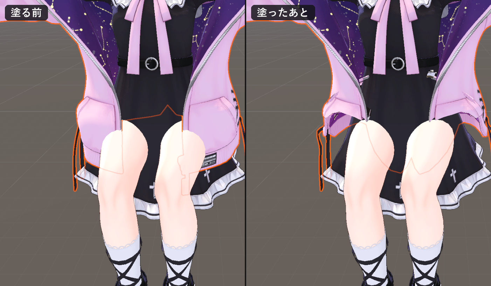
左が直す前、右が直したあとです。 写真のワンピースで、［ポーズをチェック］の数を見ました。 元の姿勢と比べて増えた、めり込み・近すぎの点です。 座ったときは、76 個から 48 個に減りました。
［ウェイト］タブの［プリセットで設定する］を使います。 やり方は「脚についてくるように直す」にあります。
気をつけること: 裾が持ち上がることがあります。 ほかのポーズが悪くなることもあります。 しゃがむと、増えた点が 30 個から 114 個になりました。
実アバターで確認済み
粘土のように、こねて整えられる。
点を 1 つずつ動かすのは、手間がかかります。 ブラシでなぞった所が、盛り上がったり、へこんだりします。 ブラシは 7 つあり、引っぱる・盛る・ならすを使い分けられます。
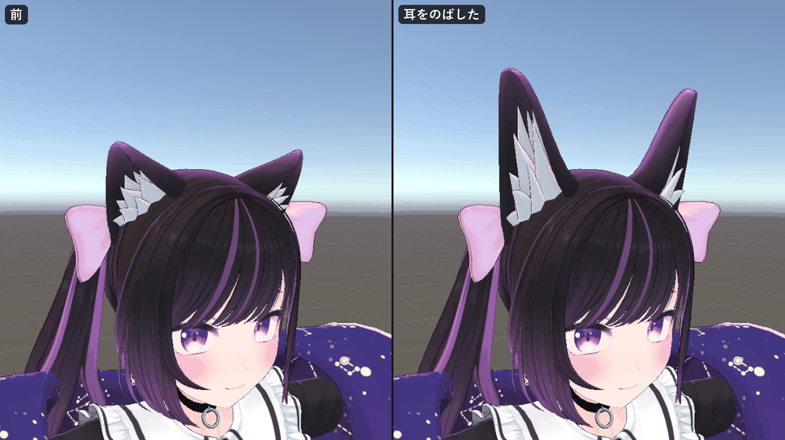
左が前、右が［つかむ］で耳の先を上へ引いたあとです。
［スカルプト］タブの［ツール］で選びます。 やり方は「ふくらませる・へこませる」にあります。
実アバターで確認済み
作った形を、スライダーで出し入れできる。
直したあとで、元の形がよかったと迷うことがあります。 直した形は、0 から 100 のスライダーで出し入れできます。 途中で止めれば、その間の形になります。
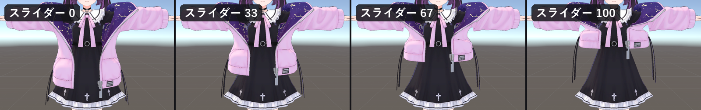
写真は、パーカーの裾を 22 cm 上げた形です。
［シェイプキー］タブか、「仕上がり」のスライダーで動かします。 やり方は「スライダーで出し入れする」にあります。
実アバターで確認済み
ほかにできることは、写真つきで「できること図鑑」にまとめました。
安心して試せます
- 元の服のデータは、書き換わりません。
- まちがえたときは、Ctrl+Z で戻せます。
- 編集中は、ポリゴン（服の表面をつくる三角形）の調整も戻せます。
- ［保存して終了］のあとは、編集中の履歴では戻せません。
- やめたいときは、［破棄］を押します。
［破棄］を押すと、保存していない編集がすべて消えます。 始める前の形に戻るので、気軽に試してください。 直した内容は、元の服とは別のファイルに入ります。
必要なもの
- Unity 2022.3 か、Unity 6。
- 直したい服が入った、アバターのデータ。
- VRChat SDK は、なくても使えます。
かかる時間
入れるまでが約 10 分、はじめての練習が約 10 分です。
先に知っておく言葉
この手引書では、次の言葉を使います。 「言葉の一覧」にも、同じ説明があります。
- プロジェクト（Unity で作業しているデータの入れ物）。
- ヒエラルキー（Unity の左にある、置いてある物の一覧）。
- インスペクター（Unity の右にある、選んだ物の設定の窓）。
- シーンビュー（Unity の真ん中にある、服を見る画面）。
- プロジェクトウィンドウ（Unity の下にある、プロジェクトの中のファイルの一覧）。
- メッシュ（服の形そのもののデータ）。
- 頂点（服の形を決めている小さな点）。
- ポリゴン（服の表面をつくる三角形）。
- シェイプキー（形の変化を、0 から 100 のスライダーで出し入れするもの）。
- ウェイト（服の頂点が、骨の動きにどれだけついていくかの割合）。
- ボーン（アバターの骨）。
- スカルプト（粘土をこねるように、ブラシでなぞって形を整えること）。
画像の見方
画像の赤い枠と数字は、押す場所です。 その下の手順の番号と、同じ数字になっています。
服の突き抜けを直す
服から体が透けて見える。 よくある悩みの 1 つです。 メッシュ工房は、めり込みを見つけて、色で見せて、押し出して直します。
めり込みを色で見つけて、ボタンでおし出す
めり込んだ所は、目でさがすと、見おとします。 チェックすると、赤＝めり込み、黄＝近すぎ、緑＝安全の色で出ます。 ［自動修正］を押すと、赤い所が体の外へおし出されます。
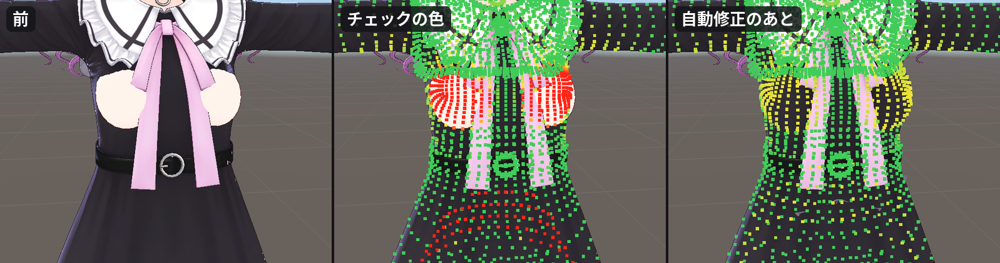
写真のワンピースで、体のシェイプキー Breast_big（胸を大きくする）を 100 にして試しました。 左は、胸から肌が見えている所です。 中が、チェックの色です。 右が、［自動修正］のあとです。 めり込みの点は、536 個から 0 個になりました。 右の胸は、赤が消えて、黄（近すぎ）になりました。
［チェック］タブで、［体のレンダラー］にアバターの体を入れます。 ［貫通をチェック］を押してから、［自動修正］を押します。 やり方は「めり込みを直す」にあります。
気をつけること: つくりの込み入った服では、めり込みが少しのこることがあります。
実アバターで確認済み
直し方が気に入らなければ、強さを変える
自動修正の分は、「貫通修正」という別のシェイプキーに入ります。 元の形は変わりません。 スライダーで強さを変えたり、一部だけのこしたりできます。
［シェイプキー］タブで、「貫通修正」のスライダーを動かします。
実アバターで確認済み
7 つのポーズで、まとめてたしかめる
立っているときは平気でも、座るとめり込むことがあります。 ボタン 1 つで、選んだポーズを順に当てて、しらべます。 初めは、下の 7 つが選ばれています。 ポーズごとに、めり込み・近すぎの点の数が、一覧に出ます。 行にマウスを合わせると、深さも出ます。 Play モードにしなくてかまいません。
| 調べるポーズ |
|---|
| 元の姿勢、腕を上げる、腕を下げる、腕を前に出す |
| 脚を曲げて座る、しゃがむ、体をひねる |
手元の服なら、どれが使えるかの見きわめにもなります。 どのポーズで何個めり込むかを、服の作者につたえるときにも便利です。 ［全ポーズで自動修正］なら、選んだポーズをまとめて直します。
［チェック］タブの［いろいろなポーズでチェック］を開いて、［ポーズをチェック］を押します。 アバターの Animator を使います。
実アバターで確認済み
好きなポーズの、決めの 1 瞬間で見る
お気に入りのエモートで、服がどう見えるかをたしかめられます。 アニメーションのクリップの、好きな時刻のポーズを当てて見ます。 座る途中のように、元の姿勢との間のポーズにもできます。 どこから突き抜け始めるかが分かります。
［チェック］タブの［ポーズを当てて見る］を開いて、クリップを入れます。 ［クリップのポーズを当てる］と、［強さ（元の姿勢との間）］を使います。
気をつけること: まとめて数えるのは、［ポーズをチェック］で選んだポーズです。クリップのポーズは、目で見てたしかめます。
仕組みは動く
点のあいだの面も、しらべる
点はめり込んでいないのに、面の途中が体を横切ることがあります。 点のあいだの辺や面の中もしらべるので、すじのようなめり込みも見つかります。
直しても、縫い目で服が割れにくい
服には、模様の貼り方の継ぎ目があります。 自動修正や点の移動では、継ぎ目の両がわをそろえて動かします。 そのため、さけにくくなっています。
粘土のように、形を変える
服の形は、粘土のように変えられます。 丈を伸ばす、ふくらませる、左右をそろえる。 どれも、シーンビューで形を見ながら行います。 変えた形は、あとからスライダーで出し入れできます。
ブラシでなぞって、こねるように整える
点を 1 つずつ動かして形を作るのは、手間がかかります。 ブラシでなぞると、なぞった所が盛り上がったり、へこんだりします。 7 つのブラシを、作りたい形に合わせて使い分けます。
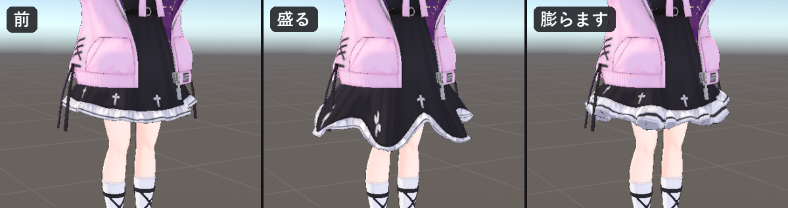
左がなぞる前、中が［盛る］、右が［膨らます］でなぞったあとです。
| ブラシ | なぞると |
|---|---|
| ［つかむ］ | つかんで、ドラッグした方へ引っぱる |
| ［盛る］ | 盛り上げる。Ctrl を押しながらなら、削る |
| ［膨らます］ | 風船のように、ふくらませる |
| ［滑らかに］ | でこぼこを、なめらかにならす |
| ［均す］ | 形をなるべく保ちながら、点どうしの間をそろえる |
| ［平らに］ | 平らな面に近づける |
| ［寄せる］ | ブラシの中心へ、寄せ集める |
［スカルプト］タブで、［スカルプトのモードにする］をオンにします。 ブラシは［ツール］で選びます。 やり方は「ふくらませる・へこませる」にあります。
実アバターで確認済み
スカートの丈を、好きな長さに
気に入った服なのに、丈だけが好みと違うことがあります。 裾をひと回り選んで、矢印を引くだけで、丈が伸び縮みします。 引いている途中でも、ホイールで、いっしょに動く範囲を変えられます。

裾を 10 cm 下げた例です。 左が下げる前、右が下げたあとです。
［頂点］タブで、裾の点を Alt+クリックして選びます。 やり方は「スカートの丈を伸ばす」にあります。
気をつけること: 裾の曲がりが大きい所では、ひと回り選べずに止まることがあります。 足りない点は、Shift+クリックで足します。
実アバターで確認済み
片側を直すと、反対側も同じ形に
反対側を同じ形にそろえるのは、むずかしいものです。 左右対称をオンにすると、反対側も鏡に映したように動きます。 ブラシでなぞるときも、同じです。

左が動かす前、右が片側の裾を下げたあとです。 反対側の裾も、同じように下がっています。
［頂点］タブか［スカルプト］タブで、［左右対称（オフ）］を開きます。 「左右対称にする軸」の［X］をオンにします。 やり方は「左右を同時に直す」にあります。
実アバターで確認済み
ほかにも、こんなことができます
服を、ふっくら・ぴったりに
選んだ所を、面の向きに沿って、外へふくらませたり、内へへこませたりできます。 ［頂点］タブの［数値入力・押し出し・なめらかにする］にある、［押し出す］を使います。
なめらかにする・数字で動かす
［頂点］タブの［数値入力・押し出し・なめらかにする］を開きます。 ［選択範囲をなめらかにする］で、選んだ範囲をならせます。 ［縮みにくいならし方にする］をオンにすると、全体が縮みにくくなります。 ［数値で動かす］に量を入れて［適用］を押すと、きっちり動かせます。
リボンやボタンだけを動かす
［頂点］タブで L+クリックすると、つながった部品をまとめて選べます。 ［選択の詳しい操作］の［マテリアルで選ぶ］で、同じマテリアルの所だけも選べます。
左右がそろっていない服でも、左右対称に
反対側に対になる点が無くても、鏡に映した位置のまわりに、同じ向きの動きを入れられます。 体の中心がずれているときは、左右対称の境目の位置もずらせます。
盛り上げても、下の服や体を突き抜けにくい
ブラシは初めから、同じアバターの体・服・髪の面の手前で止まります。 止まる相手は、表示されているメッシュです。 ただ、元からの重なりや、面の途中の交差は、残ることがあります。
変えた形の出し入れは、「スライダーで出し入れする」にあります。
布のように、引っ張る
点を動かすと、そこだけがとがって伸びることがあります。 布のモードなら、つまんだ所のまわりが、布のようについてきます。 動かしたくない所には、ピンを打ちます。
つまんで引っ張ると、まわりがついてくる
裾をつまんで引くと、まわりの布が、長さを保つようについてきます。 そのため、1 か所だけが伸びすぎにくくなります。 引いた所が、布らしい形にまとまります。
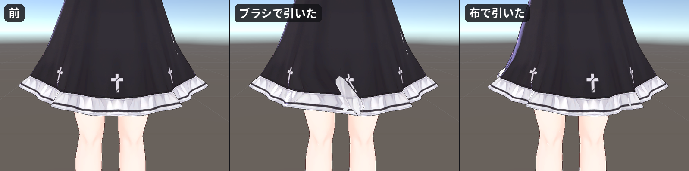
写真は、ワンピースの裾の前を、右へ引いたところです。 中は、ブラシの［つかむ］で引きました。 右は、布の［つまむ］で引きました。 伸びの最大は、ブラシで約 98%、布で約 3% でした。 ブラシは 1 か所がとがり、布はまわりがなめらかについてきます。
［布］タブで、［布のモードにする］をオンにします。 ［つまむ］に切り替えて、シーンビューでドラッグします。 やり方は「布のように引っ張る」にあります。
気をつけること: 強く引くと、伸びが残ることがあります。 実アバターの服 12 部品で試したときは、最大 33% 伸びました。 何度も引いたときの伸びは、保証しません。 布は、まわりの長さを保つので、引いた点の動きも控えめです。 写真では、8 cm 引いても、布は 3.2 cm だけ動きました。
実アバターで確認済み
動かしたくない所に、ピンを打つ
腰まわりのように、動いてほしくない所があります。 ピンを打った所は、引っ張ってもその場に残ります。 ［頂点］タブで［ロック］した点も、布では動きません。
［布］タブの［ピンを塗る］でなぞって、ピンを打ちます。 選んだ点にまとめて打つなら、［選択をピン留め］を押します。
仕組みは動く
引っ張りすぎが、色で分かる
伸びた所は赤、縮んだ所は青で出ます。 見た目では分かりにくい伸びすぎも、ひと目で見つかります。 基準の形は、編集を始めたときの形か、元のメッシュの形です。 今の形を、基準に取り直すこともできます。
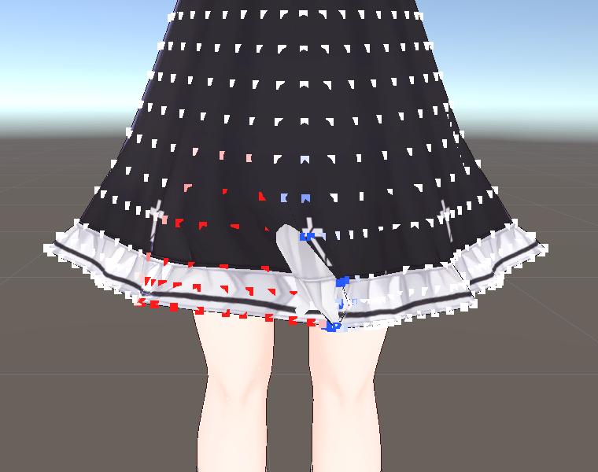
写真は、ブラシで引いた裾に、伸びの色を出したものです。 引いた所のまわりに、赤い点が並んでいます。 同じ裾を布で引いたときは、赤は出ませんでした。
［布］タブの［表示の設定］を開きます。 ［伸びの色を表示（縮み＝青、伸び＝赤）］をオンにします。 基準は［伸びの基準］で選びます。
仕組みは動く
つまんだ形を、あとから出し入れ
ドレスの裾を、つまみ上げた形にできます。 引っ張った形も、シェイプキーに入ります。 スライダーで、つまんだ形と元の形を切り替えられます。
［シェイプキー］タブで［新しいシェイプキー］を作ってから、布で引っ張ります。
気をつけること: 実アバターのワンピースで試すと、変化は小さめでした（最大で約 3 cm）。
実アバターで確認済み
となりの部分を、巻き込まない
スカートの前を引くと、近くの後ろまで動くことがあります。 範囲を、表面に沿った距離で測ると、つながっていない所は動きません。
［布］タブの［詳しい設定］を開きます。 ［つまむ範囲の測り方］で［表面に沿った距離］を選びます。
スライダーとボタンで、切り替える
直した形は、シェイプキーになります。 0〜100 のスライダーで、出したり消したりできます。 袖まくりや丈の長短を、あとから切り替えられます。
作った形を、スライダーで出し入れ
作った形が気に入るか、着せてみるまで分からないことがあります。 スライダーなら、形の強さを少しずつ変えて、くらべられます。 0 にもどせば、そのキーの変形はなくなります。

左が 0、右が 100 です。
［シェイプキー］タブで、［新しいシェイプキー］を押してから形を作ります。 やり方は「スライダーで出し入れする」にあります。
実アバターで確認済み
ボタン 1 つで、切り替える
シェイプキーを 0 にするクリップと、100 にするクリップを作れます。 VRChat のメニューにつなげば、ボタンで形が切り替わります。
［出力］タブの［シェイプキーのオン・オフのクリップを作る］を開きます。 キーを選んで、［オン・オフのクリップを作る］を押します。
気をつけること: メニューの設定は、メッシュ工房の外で行います。
仕組みは動く
1 本のスライダーで、短い・中くらい・長い
いくつかの形を、1 本のスライダーにまとめられます。 書き出すと、スライダーを上げるにつれて、形が順に重なったり、切り替わったりします。 シェイプキーが多すぎてメニューが長いときにも、まとめると短くなります。
［シェイプキー］タブの［グループを作る］を開きます。 ［まとめ方］を選んでグループを作り、キーをその中へ移します。
仕組みは動く
シェイプキーの手入れ
作ったシェイプキーは、あとから手を入れられます。 最後の行のほかは、［シェイプキー］タブにあります。 多くは、キーを編集中にして、［編集中のシェイプキーを加工する］を開いて使います。
| したいこと | 使う所 |
|---|---|
| 左右を、別々に動かす | ［左右に分割］ |
| 左で作った形を、右用にする | ［複製］してから［左右を入れ替える］ |
| 効きすぎ・弱すぎを直す | ［強さを変える］ |
| 一部だけ効かせる | ［選んだ範囲だけ残す］ |
| 途中の形だけ取り出す | ［値で分割］ |
| 案 A と案 B を、くらべる | ［複製］して、スライダーで見くらべる |
| いくつかの形を、1 つにする | ［複数のシェイプキーを1つにする］の［今の値で足して1つにする］ |
| 形を決めて、スライダーなしにする | ［元の形に焼き込む］を開いて、［焼き込む対象］を選ぶ |
| 動かしても、陰影をきれいに保つ | ［設定］タブの［シェイプキーの法線］ |
仕組みは動く
動くと服がおかしい
座る、脚を上げる。 動いたときに服がおかしくなるのは、ウェイトのせいのことが多いです。 ウェイトは、点がどのボーンに、どれだけついて動くかの割合です。
座ったときの突き抜けを、減らす
立つと平気なのに、座ると太ももが突き抜ける。 よくある悩みです。 ボタンを 1 回押すと、服のウェイトが体に近づきます。 強さはスライダーで、目で見ながら決めます。
左が直す前、右が直したあとです。 数えたのは、元の姿勢と比べて増えた、めり込み・近すぎの点です。 写真のワンピースでは、座ったときが 76 個から 48 個に減りました。
スカートの編集を始めます。 ［ウェイト］タブの［プリセットで設定する］を押します。 ［体に合わせる強さ］で強さを決めて、［この強さに決める］を押します。 やり方は「脚についてくるように直す」にあります。
気をつけること: 裾が持ち上がります（右の写真）。 ほかのポーズが悪くなることもあります。 写真のワンピースでは、しゃがむと、増えた点が 30 個から 114 個になりました。
実アバターで確認済み
ウェイトを色で見て、ブラシで塗る
どのボーンについているかは、目に見えません。 色の表示をオンにして、ボーンを選びます。 すると、ウェイトが色で出ます（青＝0、緑＝0.5、赤＝1）。 足りない所は、ブラシで塗って直します。
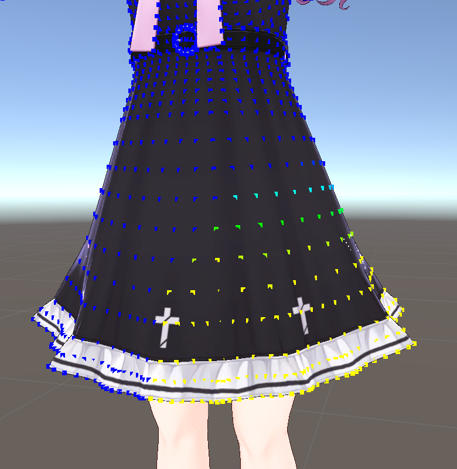
写真は、［プリセットで設定する］のあとのスカートです。 左の太もものボーン（Upper_Leg.L）を選びました。 太ももの影響が、スカートの裾に出ています。 プリセットの前は、全部が青（0）でした。
［ウェイト］タブで、［ウェイトペイントのモードにする］をオンにします。 塗り方は［混ぜる］［足す］［引く］［ぼかす］から選びます。 色は、［そのほかの機能］の［表示］でオンにします。
実アバターで確認済み
片脚を塗ったら、反対の脚にも写す
左脚をていねいに塗れば、右脚へ鏡のように写せます。 はじめから、左右対称に塗ることもできます。
［ウェイト］タブの［そのほかの機能］を開きます。 ［左 → 右へ写す］と［左右対称に塗る（X = 0 の面で、ボーン名の左右で対応）］を使います。
仕組みは動く
アップロードで崩れる前に、ウェイトを整える
1 つの点に、5 本以上のボーンがついていると、崩れることがあります。 そういう点は、赤で見つけられます。 本数を 4 本にしたり、合計を 1 にしたりできます。
［ウェイト］タブの［そのほかの機能］を開きます。 ［ついていくボーンが多い頂点を赤で表示］で見つけます。 ［本数を制限］と［合計を 1 にそろえる（正規化）］で整えます。
仕組みは動く
ウェイトを、別のボーンへ移す・ボーンを足す
あるボーンの分を、別のボーンへまとめて移せます。 リボンやケープ用に、シーンの物を、塗れるボーンとして足せます。
［そのほかの機能］の中の、［移動する］と［追加のボーン］の［追加］を使います。
気をつけること: 揺れの設定は、メッシュ工房の外で行います。
体型に合わせて、服もついてくる
体のシェイプキーで、胸やヒールを変えられるアバターがあります。 でも、服によっては、ついてきません。 体のシェイプキーを服に読み込めば、服も体の変化に近づきます。 仕上がりは、服によってちがいます。
ヒールにしたら、ブーツもかかとの角度に
体の足をヒールの形にすると、ブーツが取り残されます。 体の Highheel のシェイプキーを、ブーツに読み込みました。 真横から見ると、ブーツもかかとの角度になりました。
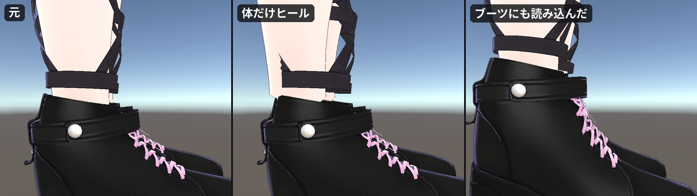
写真は、体の Highheel を 100 にして、真横から撮りました。 中は、体だけをヒールにした形です。 足首が、ブーツから抜けています。 右は、ブーツにも読み込んで、かかとが足の角度に合いました。 靴下は、隠しました。
［シェイプキー］タブの［ほかから読み込む］を開きます。 ［別のメッシュから］に、体のメッシュを入れます。 シェイプキーを選んで、［選んだものを読み込む］を押します。
気をつけること: このブーツでは、めり込み・近すぎの点が減りました。 体だけヒールのときの約 600 個から、約 170 個になりました。 全部は消えませんでした。 いちばん深いめり込みは、ほぼ変わりません。 残った所は、［チェック］タブでたしかめて、直せるか試します。
実アバターで確認済み
胸を大きくしたら、服の胸も大きく
体の Breast_big を、ワンピースに読み込めました。 体とワンピースで点の数がちがっても、読み込めました。 近い位置をさがして、形を移します。
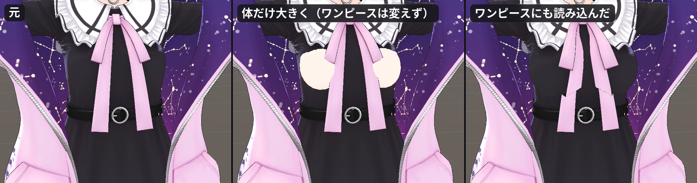
写真は、体の Breast_big を 100 にしたワンピースの胸です。 中は、肌がワンピースを突き抜けて見えます。 右は、ワンピースにも読み込んで、肌が隠れました。 めり込み・近すぎの点は、左から 202 個、536 個、202 個です。
読み込み方は、ブーツと同じです。
気をつけること: 胸に重なるリボンなどの飾りは、形がずれることがあります。 右の写真では、リボンが横にずれています。 ブラシで整えます。
実アバターで確認済み
別の服やアニメーション、Blender の形も読み込める
シェイプキーは、ほかからも読み込めます。 別のメッシュ、アニメーションのクリップ、別の編集データです。 Blender で作った形も、メッシュにすれば使えます。
気をつけること: 点の数がちがうメッシュからの読み込みは、上の胸の例で見ました。飾りがずれることがあるので、読み込んだあとは、見てたしかめます。
自分好みに作り込む
服を直すだけではありません。 キャラの表情も、自分好みに変えられます。 作った表情は、スライダーで強さを決めて、ボタンで切り替えられます。
自分だけの表情を作る
アバターにない表情も、ブラシでこねて作れます。 たとえば、ぷっくりした頬です。 作った表情は、シェイプキーになります。 0〜100 のスライダーで、強さを変えられます。 オン・オフのクリップにすれば、ボタンで切り替わります。
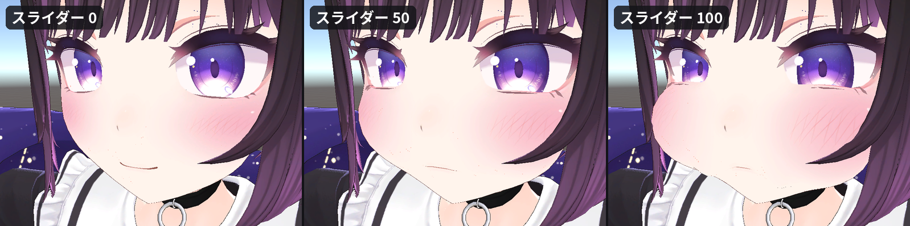
写真は、自分で作った「ふくれっ面」という表情です。 ［膨らます］で頬をふくらませ、［つかむ］で口の端を下げて作りました。 スライダーが 0 のときは笑顔です。 100 にすると、頬がふくらんで、口の端が下がります。 動いた点は、1,918 個でした。
［シェイプキー］タブで［新しいシェイプキー］を作ります。 ［スカルプト］タブのブラシで、顔をなぞって形を作ります。
気をつけること: アバターの利用規約で、顔の改変が許されているかを、先にたしかめてください。 写真の 100 では、ふくらんだ頬が、髪の束に重なって見えます。
実アバターで確認済み
笑顔の、気になる所だけ直す
笑うと目の下がつぶれすぎる、ということがあります。 元の笑顔のシェイプキーを読み込んで、目の下だけ弱めた版を作れます。 元のキーは、そのまま残ります。
試したところ、目の下の 80 個の点を選んで、直せました。 いちばん大きな動きは、1.29 mm から 0 mm になりました。 元のキーは変わらず、直したものは別のキーになりました。
［ほかから読み込む］で、元のシェイプキーを読み込みます。 そのキーを編集中にします。 ［編集中のシェイプキーを加工する］の［複製］を押します。 複製したキーを編集中にして、目の下を選びます。 ［選んだ範囲の変形を取り除く］を押します。
気をつけること: 直した笑顔は、元のキーとは別のキーになります。 目の下だけの変化は小さく、写真では見分けられませんでした。
実アバターで確認済み
重い・荒れるを直す
ポリゴンが多すぎると、重くなります。 少なすぎると、曲げたときに角ばります。 メッシュ工房なら、どちらも Unity の中で直せます。
ポリゴンを半分にしても、見た目はほぼ同じ
実アバターの髪で、残す割合を 0.5 にして減らしました。 面の数は 10,072 から 4,906 になり、見た目はほぼ同じでした。
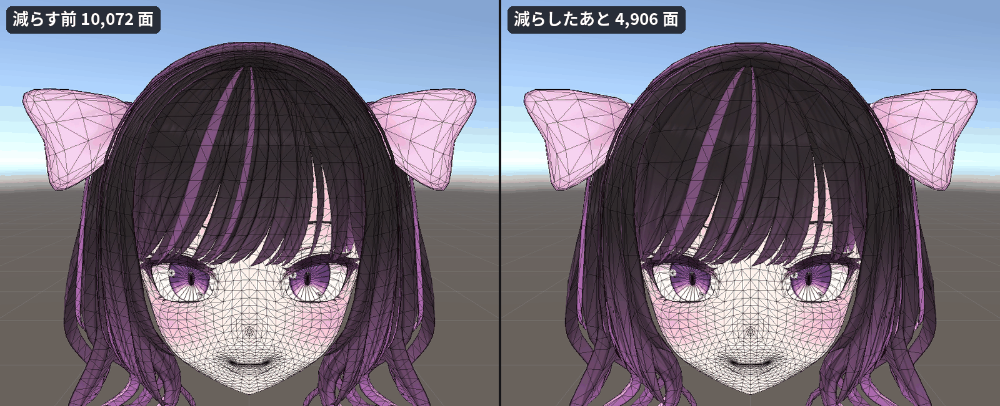
左が減らす前、右が減らしたあとです。 髪の網目が、粗くなりました。 網目を消して比べると、2 枚の画像の差は 1.57% でした。 顔の網目は、消せないので、そのまま写っています。
減らすときは、次の物を守ります。
- マテリアルの境目（いつも守ります）
- メッシュの縁と、シェイプキーで動かした所（はじめから守ります）
- UV の継ぎ目（設定をオンにすると守ります）
- リボンやボタンのような小さな部品（部品ごとに、点を少しのこします）
- 面の向き（裏返って黒ずまないように）
シェイプキーとウェイトは、減らしたあとの点へ移ります。
［ポリゴン］タブで［残す割合］を決めて、［ポリゴンを減らす］を押します。
実アバターで確認済み
見えない所だけ減らす・減らしすぎたらもどす
服の内側のように、見えない所だけを減らせます。 減らしすぎたときは、調整する前のメッシュにもどせます。
選んでから［選んだ部分のポリゴンを減らす］を押します。 もどすときは［元のメッシュに戻す（リセット）］を押します。
仕組みは動く
粗い所を細かくして、なめらかに曲げる
ポリゴンが粗いと、曲げたときに角ばります。 ポリゴンを増やすと、細かく曲げられるようになります。 増やすのは、選んだ所や、長い辺だけにもできます。 シェイプキーとウェイトは、新しい点へ引きつがれます。
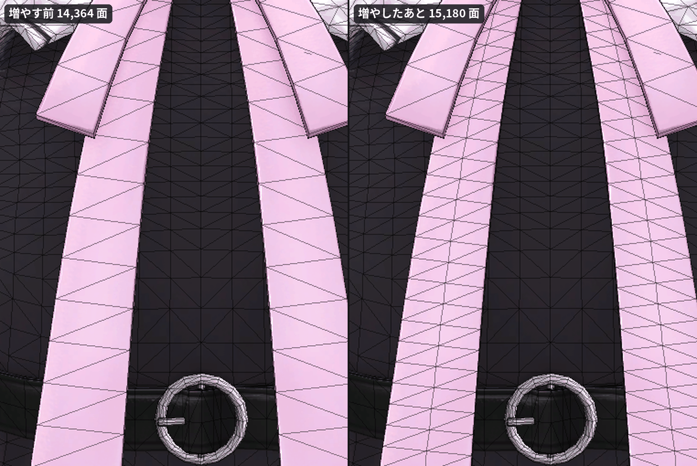
写真は、ワンピースの胸元のリボンです。 L を押しながらクリックして、リボンの点 138 個を選び、［選んだ部分のポリゴンを増やす］を押しました。 左が増やす前、右が増やしたあとです。 リボンの網目だけが細かくなり、形は変わりません。 写真の面の数は、ワンピース全体の数です。
［ポリゴンを増やす］、［選んだ部分のポリゴンを増やす］、［長い辺だけ分けてポリゴンを増やす］があります。
気をつけること: 写真で見たのは、網目が細かくなったところまでです。 曲げたときの変わり方は、まだ写真で見ていません。
仕組みは動く
点を足す・消す・複製する
メッシュの上をクリックして、足す点の位置を決めます。 いらない部分は消せます。 飾りや金具は、複製して増やせます。 べつのサブメッシュにして複製すれば、べつのマテリアルもつけられます。
［頂点を足すモードにする］で点を置き、［確定して頂点を足す］を押します。 ［選んだ頂点を削除］、［選んだ部分を複製］もあります。 消す前に［消したあとの穴を埋める］をオンにすると、穴をふさげます。 複製の前に［複製を別のサブメッシュにする］をオンにします。
気をつけること: ふさげない穴もあります（縁が開いた穴、UV の継ぎ目に接する穴など）。
仕組みは動く
形を変えても、陰影をきれいに
形を大きく変えると、陰影が乱れることがあります。 面の向き（法線）を作り直すと、陰影が整います。 元の陰影の作り込みを、いかして作り直すこともできます。 面の向きは、線で見てたしかめられます。
［設定］タブの［シェイプキーの法線］で選びます。 線は［法線を表示］で出します。
仕組みは動く
大きなメッシュでも、計算は速い
10 万の点のメッシュでも、範囲の計算と変形は、1 回 1 ミリ秒かかりませんでした（自動テストではかった値）。
気をつけること: テスト環境での計算の速さです。画面全体の速さではありません。
プログラムで、自動にする
画面でする直しの多くは、C# のスクリプトからも呼べます。 同じ直しを、何着にもくり返すときに便利です。 プログラムを書かない人は、この章を飛ばしてかまいません。
何着ものめり込みを、ボタン 1 つで直す
服が何着もあると、1 着ずつ直すのは手間です。 下のスクリプトを置くと、Unity のメニューに項目がふえます。 押すと、メッシュ工房をつけて体を決めた服を、順に調べます。 めり込みの点があれば直して、保存します。
using GP13.Editor.Api;
using UnityEditor;
using UnityEngine;
public static class MeshKoboBatch
{
[MenuItem("Tools/メッシュ工房の例/全部の服のめり込みを直す")]
static void FixAll()
{
foreach (var target in MeshEditApi.Targets())
{
if (target.body == null) continue; // 体が決まっていない服は飛ばす
var edit = MeshEditApi.Begin(target);
var before = edit.Session.CheckPenetration().Count;
if (before > 0) edit.Session.FixPenetration();
var after = edit.Session.CheckPenetration().Count;
Debug.Log($"{target.name}: {before} → {after}");
edit.SaveAndClose();
}
}
}中では、画面の［貫通をチェック］と［自動修正］と同じしくみを呼びます。 直した形は、「貫通修正」のシェイプキーに入ります。 数は、めり込んだ点と、近すぎる点の数です。
実アバターの服 3 着で、この例を 1 回動かしました。 コンパイルのエラーは、ありませんでした。 メニューを押すと、パーカーは 50 個から 0 個に、ワンピースは 536 個から 0 個になりました。 体を決めていないブーツは、飛ばされました。
スクリプトは、Assets の中の「Editor」という名前のフォルダに置きます。 メニューの Tools に、項目が出ます。
気をつけること: ［体のレンダラー］が空の服は、飛ばします。 編集中の服は、保存して編集を終えます。 自動修正で、めり込みが全部消えるとはかぎりません。
実アバターで確認済み
よく使うもの
using GP13.Editor.Api; と書いて使います。 Unity のエディタの中だけで動きます。 （ ）の中は、書かないときの値です。
| 名前 | わたすもの | すること |
|---|---|---|
| MeshEditApi.Targets | root（すべて） | メッシュ工房をつけた物（服や体）を、まとめて返す |
| MeshEditApi.Begin | target | 編集をはじめる。編集中なら、それを使う |
| edit.Session | なし | 形を変えるときに使うもの |
| Session.CheckPenetration | margin（0.002 m） | めり込んだ点と、近すぎる点を数える |
| Session.FixPenetration | margin（0.002 m）、spreadRadius（0.03 m） | めり込みを、外へおし出す |
| Session.SelectAll | なし | 選べる点を、すべて選ぶ |
| Session.ApplyNumeric | ずらす量・まわす角度・大きさ | 選んだ点を、数で動かす |
| edit.Save | なし | 保存する。編集はつづく |
| edit.SaveAndClose | なし | 保存して、編集をおえる |
| edit.Discard | なし | はじめたときにもどして、おえる |
| edit.UndoEdit | なし | ひとつ前にもどす |
| MeshEditApi.ExportMesh | target、assetPath | 直した形を、べつのメッシュとして書き出す |
| MeshEditApi.CreateClips | target、shapeNames、folder | シェイプキーのオン・オフのクリップを作る |
ほかにも、こんなことができます
Python など、外のツールから動かす
メニューの Tools の GP13 の API から、HTTP をはじめられます。 このパソコンの中からだけ、合言葉（トークン）つきで受けつけます。
自分用の道具を作る
画面にない使い方もできます。 たとえば、ポーズをつけた姿のまま点を動かすことです。 画面ではできませんが、スクリプトならできます。
安心して試せる・出せる
買った服を、こわさないか心配ですか。 メッシュ工房は、元のメッシュを書き換えません。 失敗しても、もどせます。 直した形は、アバターのビルドのときに入ります。
買った服は、そのまま残る
直した形は、元のメッシュとは別のファイルに入ります。 シーンや Prefab を保存するときは、表示を元のメッシュにもどします。 これは、初めの設定です。 そのため、編集中の形が Prefab に入りません。
メッシュ編集を追加すると、Assets の GP13_MeshEdit フォルダに、別のファイルができます。
仕組みは動く
失敗しても、もどせる
Ctrl+Z で、1 手ずつもどせます。 ［破棄］を押すと、編集を始めたときの形にもどして、編集を終えます。 途中で［保存］した分も、もどります。 長く作業しても、重くなりにくいしくみです。
［破棄］は、［保存］の右にあります。
気をつけること: ［保存して終了］のあとは、Ctrl+Z ではもどせません。
仕組みは動く
確定する前に、くらべて決める
確定する前なら、半径や左右対称を変えられます。 変えると、同じ動かし方のまま、形が作り直されます。 いくつかの形をくらべてから、決められます。
［設定］タブの［頂点の表示と操作］を開きます。 ［ハンドルを離しても確定しない（ドラッグを維持）］をオンにします。 決めたら、［確定］を押します。
仕組みは動く
うまくいった設定を、取っておく
範囲やブラシの設定に、名前をつけて残せます。 ファイルに書き出せば、別のパソコンでも使えます。
［設定］タブの［プリセット］を開きます。 ［この名前で保存］と［呼び出す］を使います。 ［ファイルに書き出す］と［ファイルから読み込む］もあります。
仕組みは動く
アップロードすると、直した形になる
NDMF が入っていれば、アバターのビルドで、直した形が自動で入ります。 手元のアバターは変わりません。 NDMF がなくても、Play モードとビルドで入ります。 これは初めの設定で、自動で入れない設定にもできます。 アップロードの前に、［仕上がりをシーンに表示する］で同じ形を見られます。
やり方は「アップロードで直した形にする」にあります。
仕組みは動く
直したメッシュを、書き出す
直した形を、メッシュとして書き出せます。 シェイプキーつきと、形を焼き込んだ物の 2 通りです。 メッシュ工房を持っていない人にも渡せます。 渡してよいかは、元の服の利用規約で決まります。 FBX と OBJ に書き出せば、Blender で続きができます。
［出力］タブの［メッシュを書き出す…］を使います。 FBX と OBJ は、［FBX / OBJ のファイルで書き出す］の中にあります。
気をつけること: FBX は、FBX Exporter が入っているときだけです。 OBJ には、ボーンもシェイプキーも入りません。 編集データは、配らないでください（元のメッシュの写しが入ります）。
仕組みは動く
服が新しい版になっても、形を移す
元のメッシュの点の並びが変わったら、直した形を新しい並びに移します。 移せなかった点の数は、警告に出ます。
気をつけること: 移すのは、シェイプキーの動きだけで、近い形になります。
Unity だけで、終わる
ウェイトもスカルプトも、Unity の中で終わります。 ふだんの編集には、追加のパッケージも VRChat SDK も要りません。 FBX で書き出すときだけ、FBX Exporter を入れます。 Unity 2022.3 と Unity 6、BRP・URP・HDRP で動きます。 手引書には、手順ごとの画像があります。
気持ちよく作業できる
細かい直しは、選ぶ・見る・もどすのくり返しです。 メッシュ工房は、そのひとつずつを軽くします。
狙った点だけを、すばやく選ぶ
選び方は、形に合わせて使い分けます。
| こうすると | 選ばれる |
|---|---|
| クリック、ドラッグで囲む | 点、囲んだ中の点 |
| C を押しながら、なぞる | なぞった所の点 |
| Alt を押しながら、クリック | 裾などの、ひと回りの点 |
| L を押しながら、クリック | つながった部品のすべて |
| ［マテリアルで選ぶ］ | 同じマテリアルの部分 |
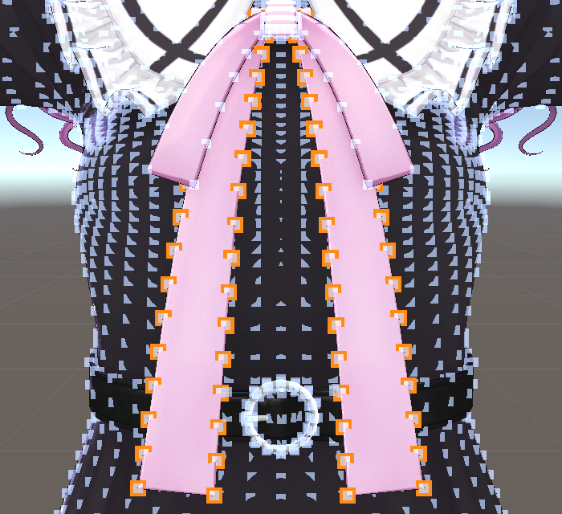
写真は、L を押しながら、胸元のリボンを 1 回クリックしたところです。 リボンの点だけが、オレンジになりました。 点の数は、138 個です。
［頂点］タブで使えます。 裏側の点を選ばないようにするには、［設定］タブの［頂点の表示と操作］を開いて、［裏向きの頂点は選ばない・表示しない］をオンにします。
仕組みは動く
よく使う選択を残し、じゃまな点はかくす
何度も選ぶ所は、名前をつけて残せます。 動かしたくない所は、ロックすると動きません。 点が重なって見づらい所は、かくせます。
［頂点］タブの［選択の詳しい操作］を開きます。 ［選択セット］の［保存］で残します。 ［ロック］と［隠す (H)］も、ここにあります。
仕組みは動く
体と服を、まとめて動かす
重ね着の服を、1 着ずつ直すのは大変です。 シーンビューに球を出すと、球の中の点を、体と服でまとめて選べます。 動かす量を数で入れると、どれも同じだけ動きます。 Ctrl+Z も、まとめてもどります。 スキンのない小物にも使えます。 リボンやヘアピン、帽子、メガネも直せます。
［設定］タブの［複数のメッシュを同時に編集する］を開いて、メッシュを 2 つ以上選びます。 ［複数編集を始める］を押してから、［球の範囲を選ぶ］と［選んだ頂点を全メッシュで動かす］を使います。
仕組みは動く
見えない所が、色と線で見える
めり込みや伸びは、目では見つけにくいものです。 色や線で出すと、どこを直せばよいかが分かります。
| 見たいもの | 見え方 |
|---|---|
| めり込み | 赤＝めり込み、黄＝近すぎ、緑＝安全 |
| 布の伸び | 青＝縮み、赤＝伸び |
| ウェイト | 青＝0、緑＝0.5、赤＝1 |
| 面の向き（法線） | 点から出る線 |
［チェック］タブ、［布］タブ、［ウェイト］タブ、［設定］タブで、それぞれ表示をオンにします。
仕組みは動く
迷ったら、タブのいちばん上を見る
多くのタブで、上のほうに「まずやること」が出ます。 ボタンにマウスを乗せると、説明が出ます。 押せないボタンには、押せないわけが出ます。
気をつけること: 使いやすさは、人が触って確かめる前です。
苦手なこと
メッシュ工房にも、苦手なことがあります。 買う前に、ここで確かめてください。 苦手なことは、ほかの道具と組み合わせると補えます。
ゼロから作る・ほかのアバターに移す
- 衣装を、別のアバター向けに変換することはしません。 着せたあとの「あと少し」を直す道具です。
- 服や小物を、ゼロから作ることはできません。 点を足す・消す・複製することはできます。 面を自由につなぐ・切る、メッシュをくっつける・分ける機能はありません。
- 色・模様・UV は変えられません。
- ボーンを、新しく作ったり、消したりはできません。
- 左耳を鏡に映して、右耳を作れるかは、確かめていません。
- 格子で囲んで変形する機能や、面・UV を選ぶ機能はありません。 画面と手引書は、日本語だけです。
揺れ・動き
- スカートの揺れや、歩いたときのめくれは直せません。 揺れ物（PhysBone）の設定などを見直します。 ウェイトを変えると、揺れが小さくなることがあります。
- 揺れている最中のめり込みは、調べません。 まとめて調べるのは、決まった 7 つのポーズです。
- 布のモードは、形を作るための引っぱりです。 アバターの中で揺れたり、ぶつかったりはしません。
- 座らせたまま、点をつまんで直すことはできません。 ポーズで見て、立った姿で直します。
全部おまかせ
- めり込みが、自動で全部消えるわけではありません。 座ったときなど、大きなめり込みは残りやすいです。 裾が持ち上がることもあります。 強さは、目で見て決めます。
- 服が体から浮いたすき間は、自動では調べません。 自動で詰める機能もありません。 手で詰めるなら、ブラシや点の移動を使います。
- 体型のスライダーに服がついてくる形を、ボタン 1 つでは作れません。 体のシェイプキーを服へ読み込む手順を、自分で行います。
- 布で引っぱっても、伸びが収まらないことがあります。 表面に沿った距離で測ると、つながっていないリボンなどは、ついてきません。
- AI が自動で直す機能はありません。
軽さ・アップロード
- パフォーマンスランクは、保証しません。 減らせるのはポリゴンだけです。 ボーンやマテリアルは減らせません。
- Quest 向けの変換はしません。 PC 版と Quest 版で、別の直し方にする設定もありません。
- FBX で書き出すには、FBX Exporter が要ります。 OBJ には、ボーンもシェイプキーも入りません。
- VRChat のメニューは作りません。 作れるのは、シェイプキーをオン・オフするクリップです。
- 表情トラッキングや口パク用のキーを、自動で作る機能はありません。 自分で形を作ったり、ほかのメッシュのキーを読み込んだりはできます。
動く場所
- 動くのは、Unity のエディタの中だけです。 アップロードしたアバターの中では動きません。
- VRChat の中での見え方と、Mac・Linux での動きは、確かめていません。
保存・更新・配る
- ［保存して終了］のあとは、Ctrl+Z で戻せません。 保存の前なら、戻せます。
- 衣装を新しい版に替えたとき、直した内容が全部移るわけではありません。 移せるのは、シェイプキーの動きです。
- もとからある表情のキーは、直接は書き換えません。 直した物は、新しいキーとして増えます。
- 編集データには、元のメッシュの写しが入ります。 人の衣装を含めて、配らないでください。 受け取る人にも、元の衣装とメッシュ工房が要ります。
悩みから探す
困っていることから、図鑑の章をさがせます。
服の突き抜けを直す
- 服から体がすけて見える
- どのポーズでめり込むか知りたい
- 買う前に、服が使えるか見たい
粘土のように、形を変える
- 丈を伸ばしたい・短くしたい
- 粘土のように、こねて整えたい
- 左右をいっしょに直したい
布のように、引っ張る
- 引っ張ると、1 か所だけ伸びる
- 動かしたくない所をまもりたい
スライダーとボタンで、切り替える
- 作った形を、出したり消したりしたい
- ボタンで、袖まくりを切り替えたい
- シェイプキーが多すぎる
- 片方だけ動かしたい
動くと服がおかしい
- 座ると、太ももがスカートを突き抜ける
- 脚を曲げると、服がついてこない
- アップロードで、ウェイトが崩れる
体型に合わせて、服もついてくる
- 胸を大きくしたら、服に埋まる
- ヒールにしたら、ブーツがついてこない
自分好みに作り込む
- 自分だけの表情を作りたい
- 笑うと、目の下がつぶれすぎる
重い・荒れるを直す
- ポリゴンが多くて重い
- 曲げると角ばる
- 形を変えたら、陰影がみだれた
- いらない部分を消したい
プログラムで、自動にする
- 同じ直しを、何着にもくり返したい
安心して試せる・出せる
- 買った服を、こわしたくない
- 失敗したら、もどしたい
- アップロードで、直した形にしたい
- Blender で続きをしたい
気持ちよく作業できる
- ねらった点だけ選びたい
- 体と服を、まとめて動かしたい
苦手なこと
- できないことを、先に知りたい
入れ方
ツールを手に入れる
BOOTH で「メッシュ工房」を購入し、商品の ZIP ファイルをダウンロードします。
ダウンロードした ZIP ファイルを解凍（展開）します。
解凍したフォルダの中に、MeshKobo.unitypackage があることを確かめます。
Unity に取り込んだあとは、ZIP ファイルや解凍したフォルダを、移動・削除してもツールは使えます。
Unity に入れる
先に、Unity で、アバターが入ったデータ（プロジェクト）を開いておきます。
-
MeshKobo.unitypackageをダブルクリックします。 Unity の上のメニューから、［Assets > Import Package > Custom Package...］を選び、MeshKobo.unitypackageを選んでも同じです。 -
「Import Unity Package」の窓が開きます。 一覧のすべてに印が付いたまま、右下の［Import］を押します。
-
Unity の読み込みが終わるまで待ちます。 画面の右下に、くるくる回る印が出ている間は、待ちます。
入ったことを確かめる
-
Unity の下にあるプロジェクトウィンドウで、
Assetsの中にMeshKoboフォルダが出ていることを確かめます。
フォルダが出ていれば、入っています。 出てこないときや、Unity に赤いエラーが出たときは、「困ったとき」を見てください。
FBX で書き出すときだけ、追加で要るもの
FBX のファイルを書き出すときだけ、Unity の公式の追加機能が要ります。 名前は「FBX Exporter」（com.unity.formats.fbx）です。 入っていないと、［FBX に書き出す…］のボタンは出ません。 OBJ のファイルは、追加なしで書き出せます。 どちらも、［出力］タブの［FBX / OBJ のファイルで書き出す］から書き出します。 くわしくは、「画面の説明（出力・設定）」にあります。
バージョンアップするとき
新しい版を入れる前に、Assets の中の MeshKobo フォルダを、プロジェクトウィンドウで右クリックして［Delete］で消します。
そのあと、新しい MeshKobo.unitypackage を、上と同じ手順で取り込みます。
フォルダを消さずに取り込むと、古いファイルが残って、動かなくなることがあります。
はじめての練習
服の点を 1 つ動かして、保存して、スライダーで出し入れします。 練習なので、どんな服でも大丈夫です。 元の服は書き換わりません。 シーンビューにマウスを置き、ホイールを回すと拡大・縮小できます。
まず、服を選びます
- ヒエラルキーで、直したい服の行をクリックします。
服の行の名前は、アバターごとに違います。 行を選ぶと、シーンビューで同じ物がオレンジの線で囲まれます。 直したい服が囲まれる行を選びます。

服には、ふつう、SkinnedMeshRenderer が付いています。 ボーンで動くメッシュを表示する部品です。 MeshFilter が付いた物にも、同じ手順で使えます。 ボーンを使わない物のメッシュを入れる部品です。 どちらも、メッシュが入っていれば、［編集を開始］を押せます。 ただし、MeshFilter の物では、ウェイトの操作は使えません。 シェイプキーのオン・オフのクリップも、作れません。
つぎに、道具を付けます
-
インスペクターのいちばん下の［Add Component］を押します。

「Mesh Edit」が、メッシュ工房のコンポーネント名です。 メニューの［GameObject > GP13 > メッシュ編集を追加］でも付けられます。
検索して選びます
-
出てきた欄に、「Mesh Edit」と入力します。
-
一覧に出た「Mesh Edit」を選びます。

編集を始めます
-
［編集を開始］を押します。

点を選びます
-
シーンビューで、好きな点をクリックします。

矢印で動かします
-
緑の矢印を、下へドラッグします。

動かした点のまわりも、なめらかについてきます。

この練習では、右下の［確定］は押さずに、次の［保存して終了］へ進めます。 保存のときに、動かした形も確定します。
保存します
-
［保存して終了］を押します。

保存のあと、シーンビューに Unity の移動の矢印が出ることがあります。 これは、服そのものを動かす矢印です。さわらないでください。
スライダーで出し入れします
-
「仕上がり」の下のスライダーを、左右に動かします。

0 にすると元の形、100 にすると直した形になります。 左が 0、右が 100 のときの形です。

うまくいかないときは、「困ったとき」を見てください。
スカートの丈を伸ばす
スカートの丈を少し伸ばしたい（短くしたい）
裾（服のいちばん下のふち）を下げると、丈が長くなります。 上げると、短くなります。 先に、服に Mesh Edit を付けて、［編集を開始］を押しておきます。 付け方は、「はじめての練習」にあります。
動く範囲を決めます
-
［頂点］タブを押します。
-
［影響範囲の半径 (m)］で、いっしょに動く範囲を決めます。

目安は、裾から上へ、丈の 3 分の 1 くらいです。 たとえば丈が 0.3m（30cm）なら、半径は 0.1m（10cm）から試します。 あとで裾を少し動かしたとき、腰まで動くなら半径が大きすぎます。 Ctrl+Z で戻し、半径を小さくして試します。 裾だけが折れるように動くなら、半径を大きくして試します。
裾をひと回り選んで動かします
-
裾の点を、Alt+クリックします。
-
緑の矢印を、下へドラッグします。

短くするときは、矢印を上へドラッグします。 下の画像は、裾を 10 cm 下げた例です。左が下げる前、右が下げたあとです。
形を残すには、［保存して終了］を押します。押す場所は「はじめての練習の手順 8」で確認できます。
確定する前に、範囲を変えて作り直します
緑の矢印を離しても、形は、まだ決まっていません。 設定の窓に［確定］と［取り消し］が出ているあいだは、範囲などを変えて、作り直せます。
-
緑の矢印を、ドラッグして動かして、離します。
-
［頂点］タブで、［影響範囲の半径 (m)］や［減衰カーブ］を変えます。
動かした形が、新しい設定で作り直されます。
-
左右対称にしたいときは、［左右対称（オフ）］を開いて、軸を選びます。
すでにオンのときは、名前が［左右対称（オン）］です。
-
形が決まったら、設定の窓の［確定］を押します。
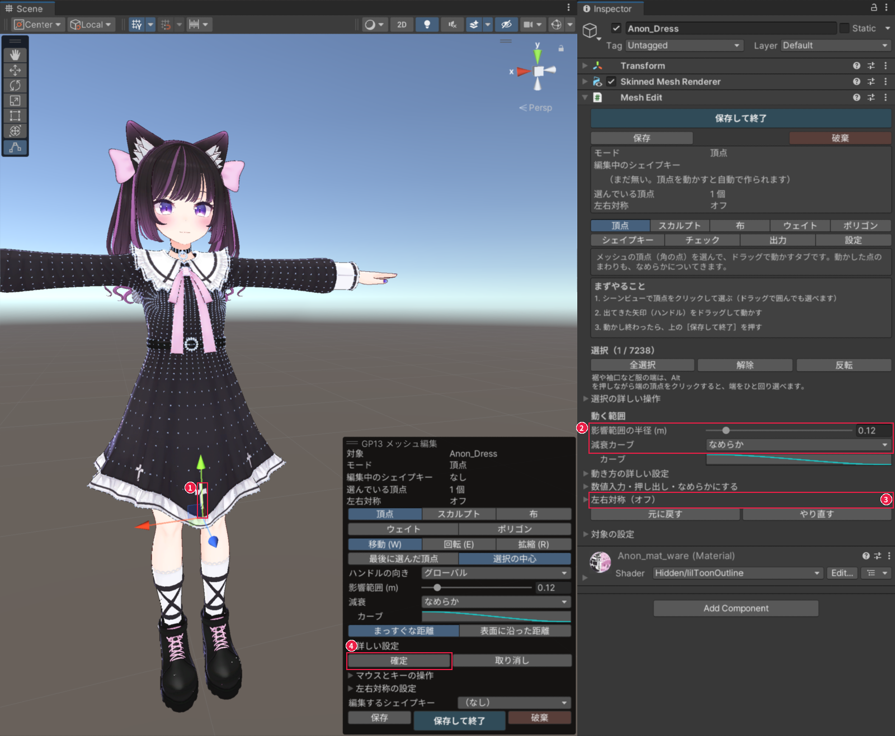
やめるときは、設定の窓の［取り消し］を押します。 点を選び直したり、［保存して終了］を押したりしても、形は決まります。 矢印を離した所で、すぐ決めたいときは、設定の窓の［詳しい設定］を開きます。 ［ハンドルを離しても確定しない（ドラッグを維持）］（はじめはオン）を、オフにします。
選べないときは
Alt+クリックで、ひと回り選べないことがあります。 足りない点は、Shift を押しながらクリックして足します。 ドラッグで、点を囲んで選ぶこともできます。 本物のアバターは、点がとても多いです。 シーンビューにマウスを置き、ホイールで拡大してから、場所を見て選びます。
めり込みを直す
服が体にめり込んでいるのを直したい
めり込み（貫通）は、服が体の中に入りこむことです。 チェックでは、頂点だけでなく面の途中も調べます。結果の［めり込み・近すぎの面の点］が残っていないかも見ます。 メッシュ工房は、めり込んだ点を赤く見せて、外へ押し出せます。 先に、服に Mesh Edit を付けて、［編集を開始］を押しておきます。 付け方は、「はじめての練習」にあります。 重ね着のときは、いちばん外側の服で試します。
体を入れます
-
［チェック］タブを押します。
-
ヒエラルキーの体を、［体のレンダラー］の欄へドラッグします。

体の行の名前は、アバターごとに違います。 行を選び、シーンビューで服ではなく体がオレンジの線で囲まれることを確かめます。 体の名前を覚えてから、服の行を選び直します。 服の欄が見えている状態で、体の行を［体のレンダラー］へドラッグします。 ［体を自動で探す］でも入れられます。 自動で見つかった名前が、確かめた体の行と同じか見ます。 違っていたら、確かめた体の行をドラッグして入れ直します。
調べて直します
-
［貫通をチェック］を押します。
-
［自動修正］を押します。

赤い点は、体にめり込んでいる所です。 黄色は近すぎる所、緑は安全な所です。 左が自動修正の前、右があとです。

形を残すには、［保存して終了］を押します。押す場所は「はじめての練習の手順 8」で確認できます。
ふくらませる・へこませる
服の一部をふくらませたい・へこませたい
スカルプトを使います。 ブラシでなぞった所が、盛り上がったり、へこんだりします。 重ね着は、いちばん外側の服を選びます。 はじめは表面に沿って、表向きの頂点だけをなぞります。別の服や体の面を横切る手前で、点の移動を止めます。 先に、服に Mesh Edit を付けて、［編集を開始］を押しておきます。 付け方は、「はじめての練習」にあります。
ブラシを用意します
-
［スカルプト］タブを押します。
-
［スカルプトのモードにする］をオンにします。
-
［ツール］の中の［膨らます］を選びます。
-
［半径 (m)］と［強さ］で、ブラシの大きさと強さを決めます。

［ツール］には、［膨らます］のほかに、6 つのブラシがあります。
- ［つかむ］: ブラシの下の点をつかんで、ドラッグした方向へ引っ張ります。
- ［盛る］: ブラシの範囲を、盛り上げます。Ctrl を押しながらなぞると、逆に削ります。
- ［滑らかに］: でこぼこを、まわりの点の平均に寄せて、なめらかにします。
- ［均す］: 形は保ったまま、点どうしの間隔を、そろえます。
- ［平らに］: ブラシの範囲を、平らな面に近づけます。
- ［寄せる］: ブラシの範囲の点を、ブラシの中心へ寄せ集めます。
［つかむ］は、点をつかんで、ドラッグします。 ほかのブラシは、［膨らます］と同じように、ドラッグしてなぞります。
なぞります
-
ふくらませたい所を、ドラッグしてなぞります。

緑の円が、ブラシの大きさです。 下の画像は、スカートの裾を［膨らます］でなぞった例です。左がなぞる前、右がなぞったあとです。

へこませたいときは、Ctrl を押しながらなぞります。
［重ね着の保護］がオンなら、同じアバターの表示中の服・体・髪を調べます。止めた点の数も画面に出ます。 元からの重なりや、点の間にある面の交差は残る場合があります。最後に、内側と背面も確かめます。 透明な面も保護の対象です。必要なら［詳しい設定］の［別のメッシュ面を突き抜けない］を外せます。
左右を同時に直す
左右を同時に同じように直したい
左右対称をオンにすると、片側を動かしたとき、反対側も同じように動きます。 先に、服に Mesh Edit を付けて、［編集を開始］を押しておきます。 付け方は、「はじめての練習」にあります。
左右対称をオンにします
-
［頂点］タブの［左右対称（オフ）］を開きます。
-
「左右対称にする軸」の［X］をオンにします。

ふつうのアバターは、左右が X の向きです。
片側を動かします
あとは、片側の点を動かすだけです。 動かし方は、「スカートの丈を伸ばす」と同じです。 反対側も、同じように動きます。 左が動かす前、右が動かしたあとです。
布のように引っ張る
布のように引っ張って形を整えたい
つまんで引っ張ると、伸びを抑えながら、まわりの布も動かせます。 動かしたくない所には、先にピン（動かしたくない点に打つ印）を打ちます。 ピンを打った点は、動きません。 先に、服に Mesh Edit を付けて、［編集を開始］を押しておきます。 付け方は、「はじめての練習」にあります。
布のモードにします
-
［布］タブを押します。
-
［布のモードにする］をオンにします。
-
［ピンを塗る］を押すと、ピンを打てます。
-
［つまむ］を押すと、布を引っ張れます。

ピンを打ちます
-
そのままにしたい所を、ドラッグしてなぞります。

引っ張ります
-
ずらしたい所を、ドラッグして引っ張ります。

手を止めると、伸びを抑える計算が進みます。 はじめは［詳しい設定］の［伸びすぎ・折り返しを抑える］がオンです。 形を保てる範囲まで動き、マウスの位置まで届かない場合があります。 ［詳しい設定］の［許す伸び (%)］の初めの値は 5（この操作で辺が伸びてよい割合が 5%）です。 ［動かせた割合］が出たら、移動を小さくするか、留める必要のないピンを外して引き直します。 保護をオフにすると、つまんだ点は目標へ動きますが、伸びや面の折り返しが残る場合があります。 この保護は体や別の服との衝突判定ではありません。引いたあとは、内側の服と体も見て確かめます。 形がくずれたときの戻し方は、「困ったとき」にあります。 布として引っ張れるのは、ひと続きにつながった服です。 リボンのように分かれた部品は、ついてきません。
引っ張った形を、スライダーで出し入れします
引っ張って動かした分も、ほかの操作と同じように、シェイプキーに入ります。 ［保存して終了］のあとは、スライダーで出したり消したりできます。 手順は、「スライダーで出し入れする」にあります。 切り替わるのは、引っ張って作った形です。 ピンを打つか外すかを、スライダーで切り替えるのではありません。
布の伸びを、色で見ます
-
［布］タブの［表示の設定］を開きます。
-
［伸びの色を表示（縮み＝青、伸び＝赤）］をオンにします。
-
［伸びの基準］で、［編集を始めたときの形］か［ベースのメッシュの形］を選びます。
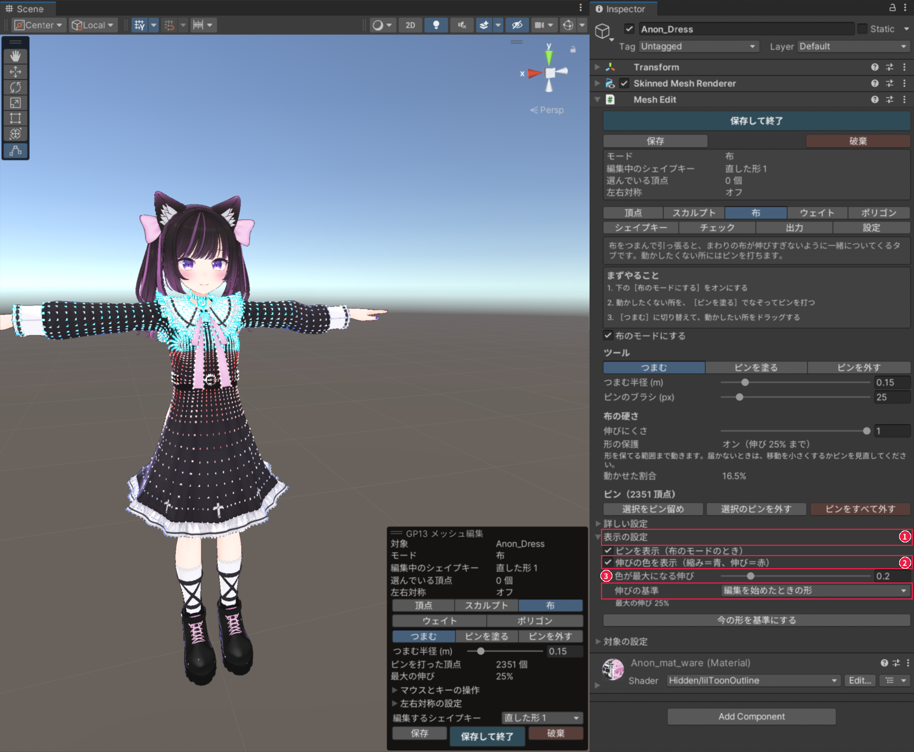
青い所は縮み、赤い所は伸びです。 ［編集を始めたときの形］は、編集を始めたときの布を、基準にします。 ［ベースのメッシュの形］は、元のメッシュを、基準にします。 基準を今の形に取り直すときは、［今の形を基準にする］を押します。 これは、［編集を始めたときの形］のときだけ効きます。 いちばん伸びた所の数も、「最大の伸び」に出ます。
スライダーで出し入れする
直した形を、スライダーで出したり消したりしたい
動かした分は、シェイプキーに自動で入ります。 スライダーを動かすと、直した形が出たり消えたりします。
編集しているとき
-
［シェイプキー］タブを押します。
-
編集している行の［●］を押します。

●が○に変わります。すでに○なら、手順 3 へ進みます。
-
一覧のスライダーを、左右に動かします。

左が 0、右が 100 のときの形です。
保存して終了したあと
-
「仕上がり」の下のスライダーを、左右に動かします。

左が 0、右が 100 のときの形です。

オンとオフのクリップを作るとき
シェイプキーを 0（オフ）と 100（オン）にするクリップも、作れます。 クリップは、アニメーションのファイルです。 ［出力］タブの［シェイプキーのオン・オフのクリップを作る］を使います。 手順は、「表情を作って動かす」の「オンとオフのクリップを作ります」にあります。 シェイプキーがあり、SkinnedMeshRenderer が付いた物で使えます。 クリップを作るところまでです。 VRChat のメニューの設定は、メッシュ工房の外で行います。
名前を変えるとき
自動で付いたシェイプキーの名前は、変えられます。 シェイプキータブの一覧で、名前の欄をクリックして書きかえます。 Enter を押すと、名前が決まります。
ポーズで確かめる
いろいろなポーズで、めり込まないか確かめたい
結果は頂点と、辺の途中・三角形の中に置いた「面の点」を別々に表示します。 頂点が 0 個でも、面の点が残っている場合は貫通が残っています。 立っているだけでは、めり込まなくても、腕を上げるとめり込むことがあります。 メッシュ工房は、いくつかのポーズで、まとめて調べられます。 先に、服に Mesh Edit を付けて、［編集を開始］を押しておきます。 付け方は、「はじめての練習」にあります。 つぎに、体を［体のレンダラー］に入れておきます。［体を自動で探す］でも入れられます。 入れ方は、「めり込みを直す」にあります。
まとめて調べます
-
［チェック］タブを押します。
-
［いろいろなポーズでチェック］の中の［ポーズをチェック］を押します。

ポーズごとに、めり込む点の数が出ます。
ポーズを当てて見ます
-
［ポーズを当てて見る］を開きます。
-
［ポーズ］で、めり込みの多かったポーズを選びます。
-
［ポーズを当てる］を押します。

もとの姿勢に戻すときは、［元の姿勢に戻す］を押します。

自動修正で服が尖った場合は、Ctrl+Z で戻します。 1つの形で、すべてのポーズへ合わせられない場合があります。 素材に体を隠す形があれば、その使い方も素材の手引書で確かめます。
脚についてくるように直す
座ったときに、服が太ももにめり込むのを直したい
脚を曲げて座ると、太ももが服の裾に、めり込むことがあります。 服の頂点は、ボーンについて動きます。 ついていく割合が、ウェイトです。 裾の頂点が太ももについていかないと、太ももだけが前へ上がって、裾を突き抜けます。 そこで、服のウェイトを、体のウェイトに近づけます。 ［体に合わせる］の［プリセットで設定する］を 1 回押すと、おすすめの設定で、合わせます。 そのあと、強さを自分の目で決めます。 足りない所は、ブラシで直します。 ここでは、スカート（ワンピース）を例にします。
左が合わせる前、右が［プリセットで設定する］を 1 回押したあとです。 合わせる前は、太ももがスカートを突き抜けています。 押したあとは、スカートが太ももの上に乗ります。
先に、服に Mesh Edit を付けて、［編集を開始］を押しておきます。 付け方は、「はじめての練習」にあります。 つぎに、体を［体のレンダラー］に入れておきます。［体を自動で探す］でも入れられます。 入れ方は、「めり込みを直す」にあります。 ［プリセットで設定する］は、体が入っていないときは、自動で探します。
合わせる前に、確かめておきます
「ポーズで確かめる」の手順で、［ポーズをチェック］を押します。 ［脚を曲げて座る］の行の数を、メモしておきます。 ［ポーズを当てて見る］で、［脚を曲げて座る］を当てると、太ももが裾を突き抜ける様子が見えます。 見終わったら、［元の姿勢に戻す］を押します。
プリセットで合わせます
-
［ウェイト］タブを押します。
-
一番上の［体に合わせる］の、［プリセットで設定する］を押します。

強さ 0.75、距離 0.3 m、ボーンは 4 本までの設定で、服のウェイトが体に近づきます。 選んでいる頂点があっても、服の全体に行います。 体が見つからないときは、体を入れる欄が出ます。アバターの体のメッシュを入れて、もう一度押します。
強さを決めます
押すと、画面が［体に合わせる（調整中）］に変わります。 調整中は、ブラシなどは隠れて、強さだけを決められます。
-
［体に合わせる強さ］を動かして、服の動きを見ます。
-
［確かめるポーズ］で、［脚を曲げて座る］を選びます。
-
服が太ももを突き抜けない所で、［この強さに決める］を押します。
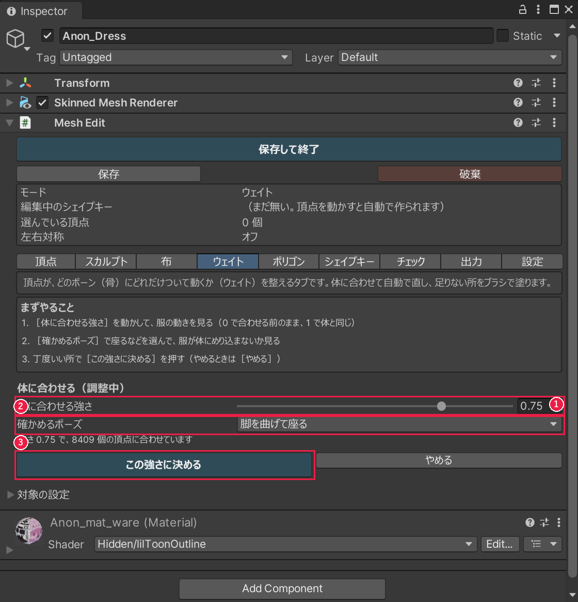
強さは、0 で合わせる前のまま、1 で体と同じです。 動かすたびに、合わせる前のウェイトから計算し直すので、何度動かしても、重なりません。 やめるときは、［やめる］を押します。合わせる前に戻ります。 ［この強さに決める］のあとは、Ctrl+Z で、合わせる前に戻せます。
強さを上げるほど、突き抜けは減ります。 上げすぎると、裾が大きく持ち上がります。 中くらいの強さで、かえって突き抜けが増えることもあります。 数字では決めずに、ポーズを当てた見た目で、決めます。
座らせて確かめます
合わせる前と同じ手順で、確かめます。 ［チェック］タブの［ポーズをチェック］を押して、［脚を曲げて座る］の行を見ます。 ［元の姿勢］の行にも、数が出ます。座る前からある分です。 写真のワンピースでは、座る前からある分を除くと、［脚を曲げて座る］の頂点が 76 個から 48 個に、面の点が 976 個から 656 個に減りました。
つぎに、［ポーズを当てて見る］で、［脚を曲げて座る］を当てて、見た目も確かめます。 見終わったら、［元の姿勢に戻す］を押します。 冒頭の写真が、その結果です。
足りない所を、ブラシで直します
合わせたあと、細かいめり込みが残ることがあります。 そこは、人がブラシで直します。 ここでは、太ももの付け根から下を、太ももに、さらについていくようにします。
-
［ウェイトペイントのモードにする］をオンにします。
-
［検索］に、Upper_Leg と入力します。
-
一覧から、Upper_Leg.L をクリックします。
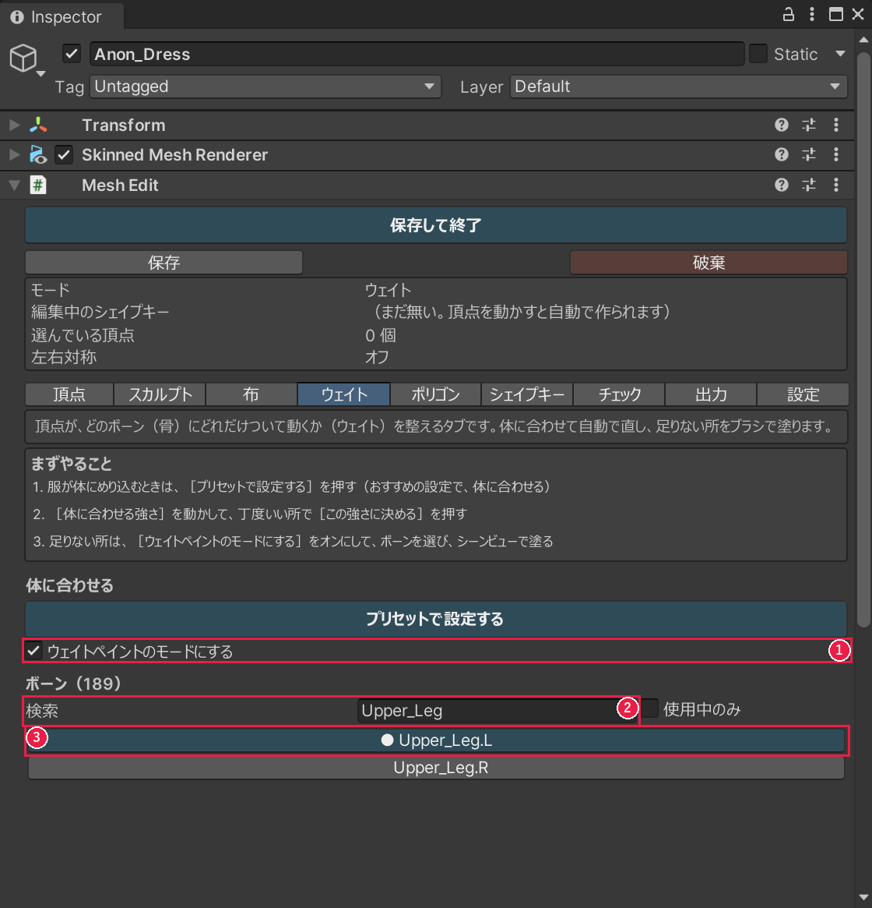
太もものボーンは、名前に Upper Leg や Thigh と付くことが多いです。 名前の終わりの L は左、R は右です。 見つからないときは、［検索］に Leg や Thigh を入れます。 左を選ぶのは、あとで左右対称をオンにして、右にも同じように塗るためです。
-
［そのほかの機能］を開きます。
-
［表示］を開きます。
-
［選んだボーンのウェイトを色で表示（青＝0、緑＝0.5、赤＝1）］をオンにします。

赤いほど、そのボーンに強くついていきます。 青は、ついていきません。
-
［混ぜる］を選びます。
-
［目標の値］を 0.75、［強さ］を 1、［半径 (m)］を 0.05 にします。
-
［そのほかの機能］の中の、［ブラシの詳しい設定・左右対称］を開きます。
-
［左右対称に塗る（X = 0 の面で、ボーン名の左右で対応）］をオンにします。
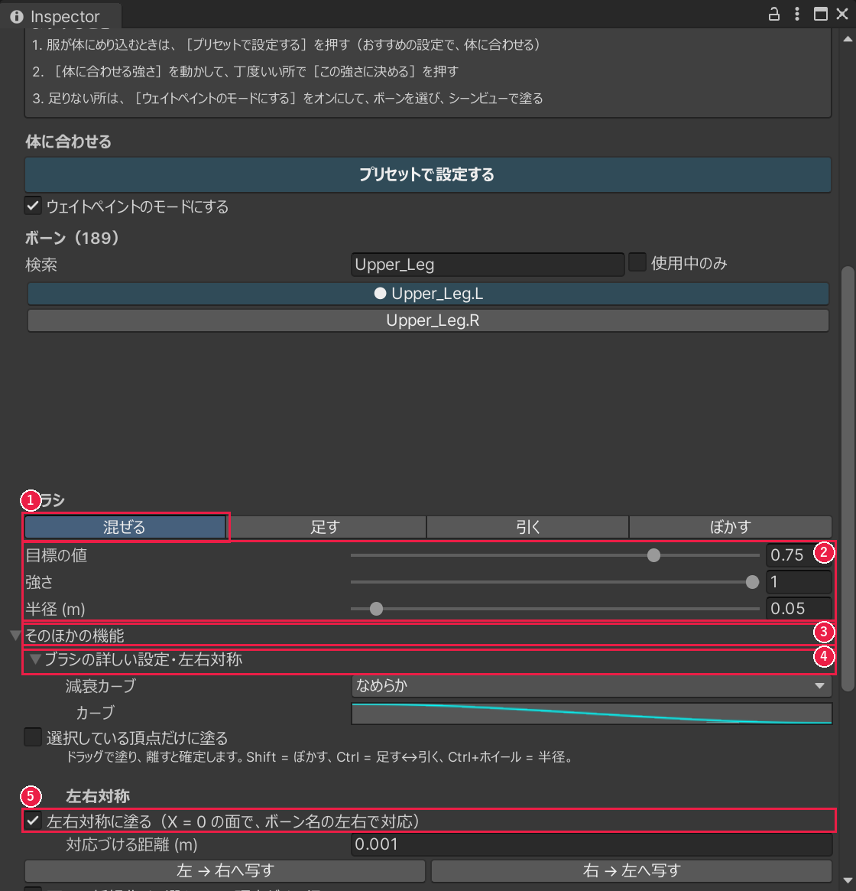
［混ぜる］は、塗った所のウェイトを、［目標の値］に近づけるブラシです。 ［強さ］が 1 なら、円の中心は、［目標の値］になります。 円の外側ほど、効きが弱くなります。 ［目標の値］を 1 にすると、裾が持ち上がりすぎることがあるので、0.75 から始めます。
-
シーンビューを、アバターの正面（顔のある側）から見る向きにします。 服の裾が大きく見えるまで、拡大します。
-
ブラシの円の中心を、太ももの付け根の高さに合わせます。 円は、マウスを服の上に置くと出ます。

-
ドラッグして、服の真ん中から、画面の右がわへ、15 cm ほど、横にまっすぐなぞります。
-
円の中心を、半径の半分ずつ下げながら、同じようになぞって、裾まで塗ります。
太ももの付け根は、脚を曲げるときに、曲がる所です。 股（脚が左右に分かれる所）より、少し上にあります。 写真の細長い赤い枠が、その高さです。 高さは、だいたいで構いません。 スカートでは、横に広く塗りすぎると、前後の裾まで引っぱられるので、左右 15 cm ほどに収めます。 画面の右がわは、アバターの左です。 左右対称がオンなので、反対がわにも、自動で塗られます。 ［目標の値］が 0.75 なので、点の色は赤ではなく、黄色になります。 なぞりすぎたときは、Ctrl+Z で戻します。
-
［ぼかす］を選びます。
-
［強さ］を 1、［半径 (m)］を 0.1 にします。
-
塗った所と塗っていない所の境目（付け根の高さのあたり）を、横になぞることを、4 回行います。
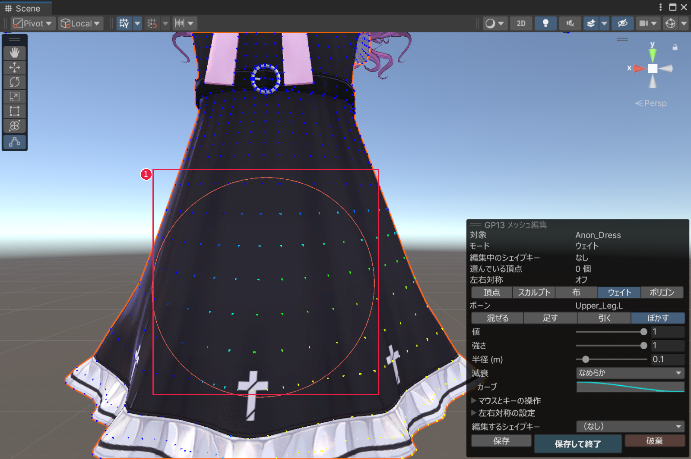
境目が急だと、服が裂けたように伸びることがあります。 ぼかして、色が少しずつ変わるようにします。
-
［そのほかの機能］の中の、［ウェイトを整える］を開きます。
-
［ボーンの本数］が 4 になっているのを、確かめます。
-
［本数を制限］を押します。
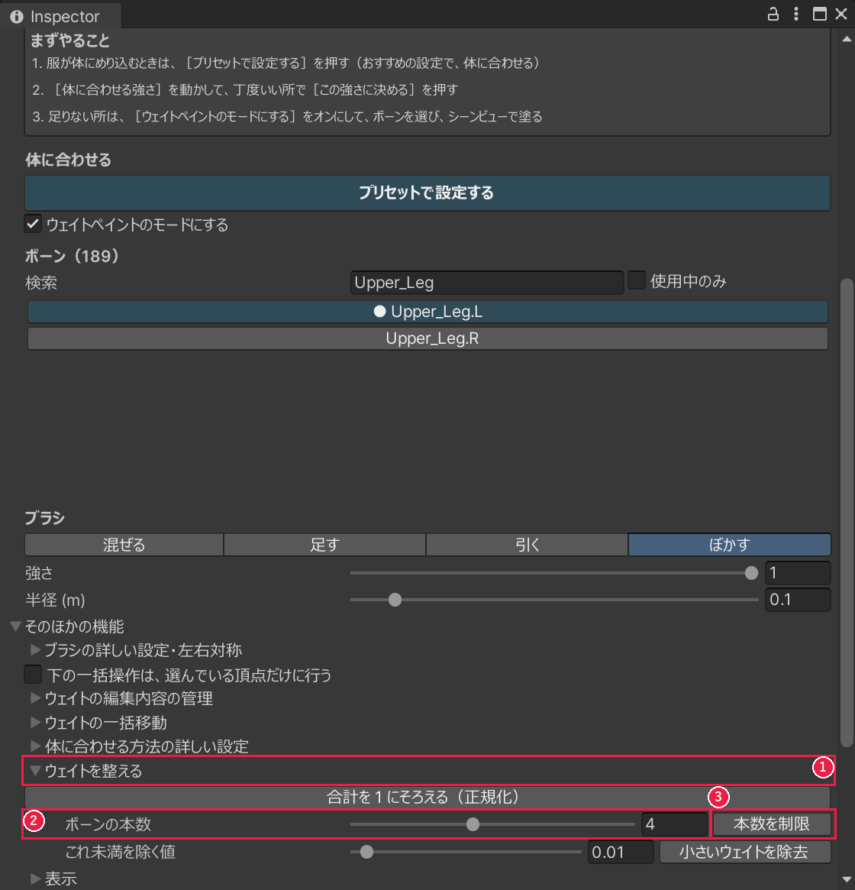
1 つの頂点がついていくボーンは、VRChat などでは、4 本までが一般的です。 体に合わせたり塗ったりすると、5 本以上になる頂点が出ることがあります。 ［本数を制限］は、弱いボーンから外して、4 本にそろえます。 塗ったあとは、もう一度、［ポーズをチェック］と［ポーズを当てて見る］で、確かめます。
うまくいかないとき
- まだ突き抜けます: ［この強さに決める］の前なら、［体に合わせる強さ］を、少し上げます。決めたあとなら、Ctrl+Z で戻して強さを上げてやり直すか、もう一度［プリセットで設定する］を押して、重ねて合わせます。それでも残る所は、ブラシで直します。
- 裾が持ち上がりすぎます: 強さを下げます。広がったスカートは、太ももについて、裾がめくれ上がります。体にぴったりした服より、持ち上がりやすいです。スカートの下の重ねや、中が見えないかも、ポーズを当てて確かめます。
- ほかのポーズが悪くなりました: ［ポーズをチェック］で、ほかのポーズも確かめます。写真のワンピースでは、［しゃがむ］の頂点が 232 個から 316 個に増えました。座るポーズを直すと、しゃがむポーズが悪くなることがあります。使うポーズに合わせて、強さを決めます。
- スカートが揺れにくくなりました: 体に合わせると、スカートは体について動くので、PhysBone などの揺れ物の揺れが、小さくなることがあります。
- 合わせた内容を取り消したい: ［この強さに決める］の前なら、［やめる］を押します。決めたあとは、Ctrl+Z で戻します。
- ［全ポーズで自動修正］で、服の形がくずれました: 座るポーズの大きなめり込みには、向きません。Ctrl+Z で戻します。
やり直す・元に戻す
やり直したい・元に戻したい
- 1 つ前に戻す: Ctrl+Z か、［元に戻す］です。
- 戻しすぎたとき: Ctrl+Y か、［やり直す］です。
- 全部やめる: ［破棄］です。
1 つ前に戻します
-
［元に戻す］を押します。
-
やりすぎたときは、［やり直す］を押します。

全部やめます
-
［破棄］を押します。

確認の窓が出ます。 「実行する」を押すと、保存していない編集が、すべて消えます。 始める前の形に戻ります。
ポリゴン調整を戻す
編集中は、ポリゴンタブの調整も Ctrl+Z で1つ前に戻せます。 Ctrl+Y でやり直せます。 調整の前後で、動かした形や選んだ点も一緒に戻ります。 履歴は編集中に使えます。［保存して終了］の前に戻してください。
［元のメッシュに戻す（リセット）］は、ポリゴン調整をまとめてやめる操作です。 消えた点の移動量などは、近くの面から求め直します。 1つ前と同じ状態に戻すときは、Ctrl+Z を使います。 リセット自体も、編集中は Ctrl+Z で取り消せます。
戻せる回数には、上限があります
戻す履歴は、変わった頂点だけを覚えます。 そのため、大きなメッシュでも、1 回分が小さくて済みます。 ポリゴン調整のように、頂点の数が変わる操作は、前と後を、まるごと覚えます。 戻せるのは、最大 200 回分です。 覚えておく大きさにも、上限（約 256 MB）があります。 超えると、古い操作から順に、戻せなくなります。 大きさの上限を超えても、いちばん新しい 1 回分は残ります。 この上限は、画面では変えられません。
アップロードで直した形にする
VRChat にアップロードしたときに、直した形にしたい
ビルド（アップロード用に、アバターをまとめて作ること）のとき、直した形が自動で入ります。 ただし、NDMF（アップロード前に、自動で処理を足す仕組み）が入っているときだけです。 Modular Avatar などを入れると、NDMF もいっしょに入ります。
設定を確かめます
-
［対象の設定］を開きます。
-
［ビルドのときに当てる］が［自動］になっていることを確かめます。

NDMF が入っていないとき
NDMF が入っていないと、アバターのアップロードでは、自動では当たりません。 そのときは、メッシュを書き出して、服に入れ直します。
-
［出力］タブを押します。
-
［メッシュを書き出す…］を押します。

書き出したメッシュを服に入れると、自動の適用は切れます。 二重に当たらないようにするためです。
Play や、ワールド・ゲームを作るときは
アップロードとは別に、Unity の Play（再生）でも、直した形が当たります。 ワールドやゲームを作る（ビルドする）ときも、同じです。 こちらは、NDMF が入っていなくても、当たります。 ［ビルドのときに当てる］が［自動］で、編集内容のデータがある服に、当たります。 ［自動］になっているかは、上の「設定を確かめます」で確かめられます。
つながった部品を選ぶ
頂点や部品を選んで、まとめて動かしたい
頂点を 1 つずつ選ぶのは、手間がかかります。 つながった部品や、同じマテリアルの頂点は、まとめて選べます。 マテリアルは、色や質感を決める設定のことです。 選んだ頂点は、まとめて動かせます。 先に、服に Mesh Edit を付けて、［編集を開始］を押しておきます。 付け方は、「はじめての練習」にあります。
頂点の選び方
| 操作 | 選ばれるもの |
|---|---|
| クリック | 頂点を 1 つ |
| ドラッグ | 四角で囲んだ範囲 |
| C+ドラッグ | ブラシでなぞった所（Ctrl を押すと外す） |
| Alt+クリック | ひとつながりの列。服の端なら、端をひと回り |
| L+クリック | つながった部品の全部 |
L+クリックは、L キーを押しながら、クリックすることです。 C+ドラッグも、C キーを押しながら、ドラッグします。 Shift+クリックで、今の選択に足せます。
つながった部品を、まとめて選びます
-
シーンビューの設定の窓で、［頂点］を選びます。
-
L キーを押しながら、選びたい部品の上の頂点を、クリックします。
-
つながった部品が、まとめて選ばれたことを確かめます。
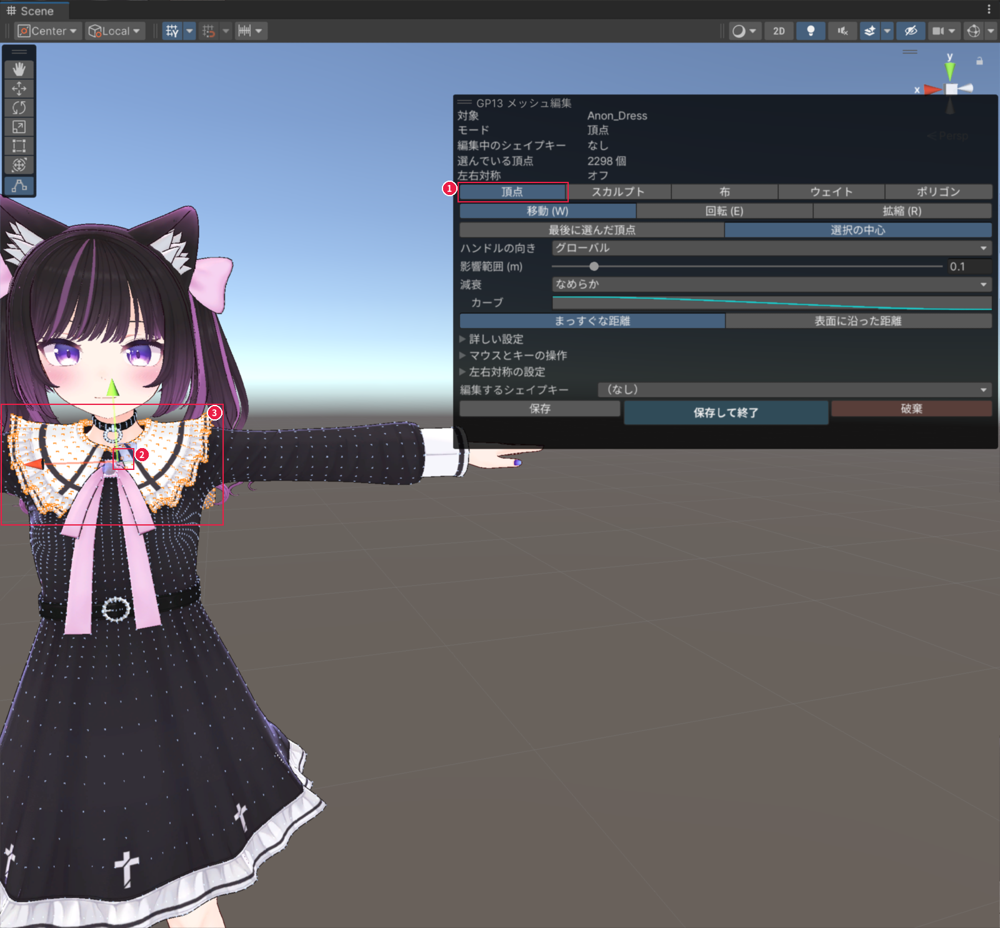
マテリアルで選びます
-
［頂点］タブで、［選択の詳しい操作］を開きます。
-
［マテリアルで選ぶ］で、選びたいマテリアルを決めます。
-
［選ぶ］を押します。
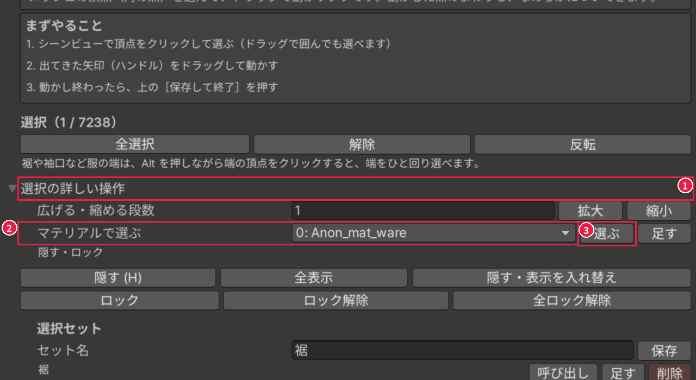
今の選択は、置き換わります。 今の選択に足したいときは、［選ぶ］の代わりに、［足す］を押します。
近くの別の部品を、巻き込まないようにします
-
［動き方の詳しい設定］を開きます。
-
［距離の測り方］で、［表面に沿った距離］を選びます。
表面に沿った距離は、表面をたどって測ります。 近くの別の部品（たとえば、腕と胴）を巻き込まず、つながった面だけが動きます。 ［まっすぐな距離］にすると、近くの別の部品も、いっしょに動きます。
動かします
［影響範囲の半径 (m)］で、いっしょに動く範囲を決めます。 選んだ頂点の緑の矢印を、ドラッグします。 動かし方は、「スカートの丈を伸ばす」と同じです。
気をつけること
- ［つなぐ距離のしきい値 (m)］を大きくすると、離れた部品も、つながっているとみなされます。
- 距離の数字が、画面に出るわけではありません。動く範囲を決める計算に使います。
選択を残す・隠す・ロックする
よく使う頂点の選択を残し、作業のじゃまを減らしたい
同じ所を、何度も選び直すのは手間です。 選んだ頂点に名前を付けて覚えておくと、あとで呼び出せます。 覚えた選択を、選択セットといいます。 じゃまな頂点は、隠したり、ロックしたりできます。 先に、服に Mesh Edit を付けて、［編集を開始］を押しておきます。 付け方は、「はじめての練習」にあります。 頂点の選び方は、「つながった部品を選ぶ」にあります。
覚える・隠す・ロックする
覚えたい頂点を選んでから、［頂点］タブの［選択の詳しい操作］を開きます。
-
［セット名］に、覚えておく名前を入れます。
-
［保存］を押します。
同じ名前で保存すると、上書きされます。
-
選択を変えてから、覚えた名前の行の［呼び出し］を押します。
今の選択は、覚えた頂点に置き換わります。
-
じゃまな頂点を選んで、［隠す (H)］を押します。
隠した頂点は、見えなくなり、選べなくなります。形は変わりません。
-
隠した頂点を戻すときは、［全表示］を押します。
-
動かしたくない頂点を選んで、［ロック］を押します。
ロックした頂点は、選べず、動かせません。
-
終わったら、［全ロック解除］を押します。
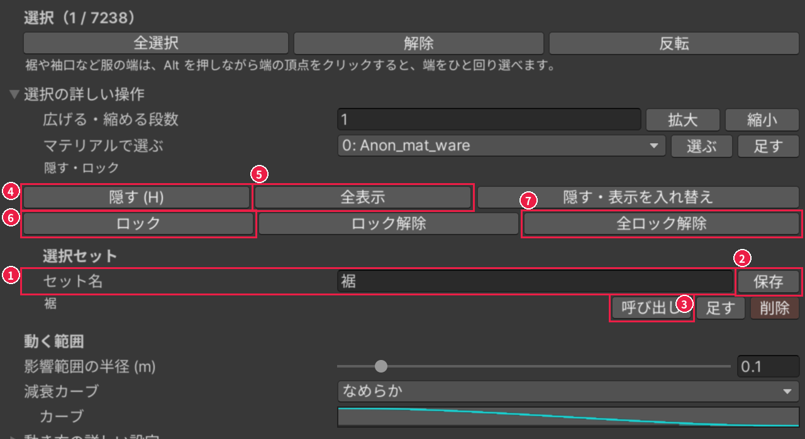
布のピンにも使えます
-
動かしたくない頂点を選びます。
-
［布］タブで、［選択をピン留め］を押します。
-
外すときは、［選択のピンを外す］を押します。
ピンを打った頂点は、布をつまんでも動きません。 ピンの使い方は、「布のように引っ張る」にあります。
気をつけること
- ［ロック］は、編集中だけの状態です。保存されません。
- 選択セットの［保存］は、頂点の選択を覚える操作です。上の［保存して終了］とは別です。
数値で動かす・押し出す
服の厚みや位置を、数値で調整したい
ドラッグでは、細かい量を決めにくいことがあります。 数字で入れれば、決めた量だけ動かせます。 面の向きに沿って動かすと、服を少し外へふくらませたり、内へへこませたりできます。 先に、服に Mesh Edit を付けて、［編集を開始］を押しておきます。 付け方は、「はじめての練習」にあります。 動かしたい頂点は、「つながった部品を選ぶ」の方法で、選んでおきます。
数字で動かす・押し出す
-
［頂点］タブで、［数値入力・押し出し・なめらかにする］を開きます。
-
［移動 (m)］に、動かす量を入れます。
X・Y・Z の向きの量です。単位は、メートルです。
-
回したいときは、［回転 (度)］に、角度を入れます。
-
大きさを変えたいときは、［拡縮］に、倍率を入れます。
1 で変わらず、2 で 2 倍、0.5 で半分です。
-
［適用］を押します。
使わない欄は、そのままにします。
-
面の向きに沿って動かすときは、［量 (m)］に、動かす量を入れます。
プラスなら外へふくらみ、マイナスなら内へへこみます。0.01 は、1 cm です。
-
［押し出す］を押します。
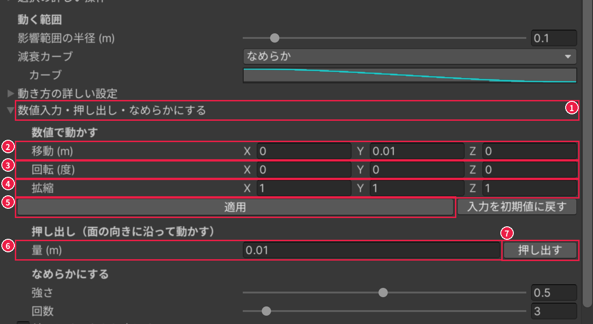
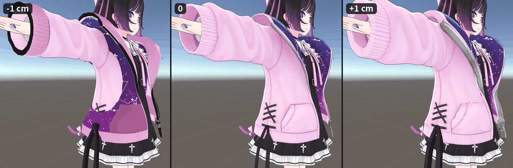
左から、-1 cm、0、+1 cm 押し出した形です。
左右の頂点がそろっていない服を、左右対称に動かす
-
［左右対称（オフ）］を開きます。
-
［X］をオンにします。
名前が、［左右対称（オン）］に変わります。
-
体の中心がずれているときは、［対称の境目の位置］を直します。
-
［反対側の探し方］で、［仮想の点］か［実際の頂点］を選びます。
-
［実際の頂点］を選んだときは、［対応づける距離 (m)］を決めます。
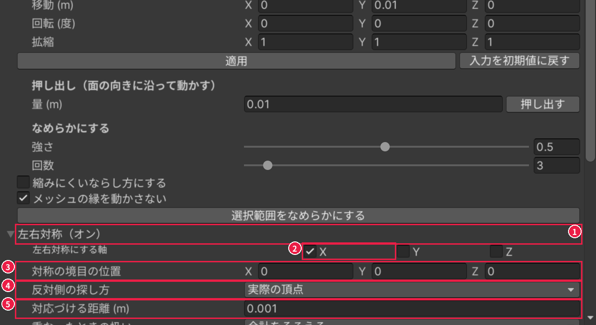
［仮想の点］は、選んだ場所を鏡に映した位置にも、同じ範囲で動きを足します。 反対側に、対応する頂点が無くても、使えます。 ［実際の頂点］は、鏡に映した位置にいちばん近い頂点を探して、動きを当てます。 左右の頂点が、対になっているメッシュ向けです。 基本の左右対称は、「左右を同時に直す」にあります。
気をつけること
- 頂点を選んでいないときや、数字が変わらない値のときは、変形されません。メッセージが出ます。
- ［対称の境目の位置］と［対応づける距離 (m)］は、服に合わせて決めます。
継ぎ目で割れないようにする
動かしても、縫い目で服が割れないようにしたい
服の継ぎ目（縫い目）では、同じ位置に、頂点が重なって分かれていることがあります。 メッシュ工房は、同じ位置にある頂点を、1 つとして扱います。 そのため、継ぎ目の両側の頂点が、同じ量だけ動きます。 継ぎ目が、開きにくくなります。 先に、服に Mesh Edit を付けて、［編集を開始］を押しておきます。 付け方は、「はじめての練習」にあります。
継ぎ目をこえて、選んで動かします
-
シーンビューの設定の窓で、［頂点］を選びます。
-
L キーを押しながら、部品の上の頂点を、クリックします。
継ぎ目で分かれていても、同じ位置にある頂点は、ひと続きとして選ばれます。
-
選んだ頂点の、緑の矢印を、ドラッグします。
継ぎ目の両側の頂点には、同じ動きが加わります。
頂点の選び方は、「つながった部品を選ぶ」にあります。 矢印の使い方は、「スカートの丈を伸ばす」にあります。
めり込みを直したあとも、確かめます
［自動修正］で直すときは、「めり込みを直す」と同じです。 直したあとは、継ぎ目の所を、前と後で見比べます。
気をつけること
- 同じ位置とみなす距離は、0.00001 m です。
- 左右対称は、別の機能です。継ぎ目を守るための、専用のボタンではありません。
- 継ぎ目の位置や、ウェイトの付き方によっては、割れないとは言い切れません。動かしたあとは、継ぎ目の所を、見て確かめます。
ポーズごとに調べて直す
ポーズごとのめり込みを見て、まとめて直したい
立っているときは、めり込まなくても、腕を上げると、めり込むことがあります。 いくつかのポーズで調べて、まとめて直せます。 ポーズは、途中の強さで当てられます。 AnimationClip（アニメーションのファイル）のポーズも、当てられます。 先に、服に Mesh Edit を付けて、［編集を開始］を押しておきます。 付け方は、「はじめての練習」にあります。 つぎに、体を［体のレンダラー］に入れておきます。［体を自動で探す］でも入れられます。 入れ方は、「めり込みを直す」にあります。
調べるポーズを選んで、まとめて直します
［チェック］タブの［いろいろなポーズでチェック］を、開いておきます。
-
［チェックするポーズを選ぶ］を開きます。
調べたいポーズに、チェックを入れます。はじめは、すべてのポーズにチェックが入っています。
-
［ポーズをチェック］を押します。
-
［全ポーズで自動修正］を押します。
チェックを入れたすべてのポーズで、めり込まないように、押し出す形を作ります。新しいシェイプキーに入り、元の形は変わりません。
-
ポーズごとの行で、頂点と面の点の数を見ます。
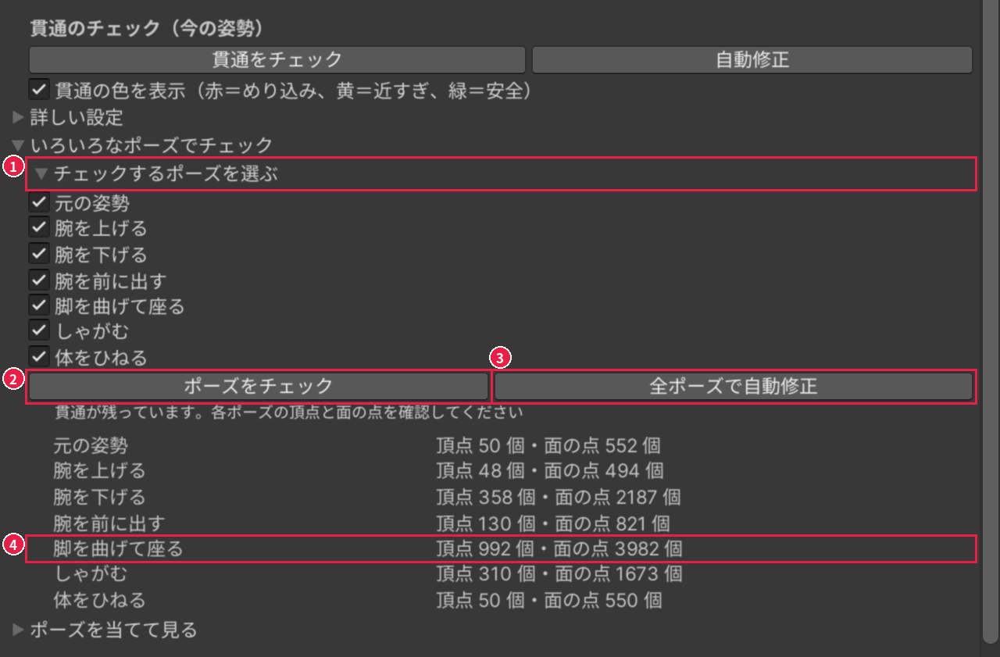
結果は、「頂点 ○ 個・面の点 ○ 個」の形で、ポーズごとに出ます。 直したあとの数も、同じ行に出ます。 結果の上に、「貫通が残っています」などの案内も出ます。
ポーズを当てて見ます
下の 1〜4 で、強さを決めて、ポーズを当てます。 クリップのポーズを見るときは、5〜7 も使います。
-
［ポーズを当てて見る］を開きます。
-
［ポーズ］で、当てるポーズを選びます。
-
［強さ（元の姿勢との間）］を決めます。
0 で元の姿勢、1 でポーズどおりです。途中の値は、その間の姿勢です。
-
［ポーズを当てる］を押します。
-
クリップを使うときは、［クリップ］に、AnimationClip を入れます。
-
［時間 (秒)］で、使う時刻を決めます。
クリップを入れると、出ます。
-
［クリップのポーズを当てる］を押します。
-
見終わったら、［元の姿勢に戻す］を押します。
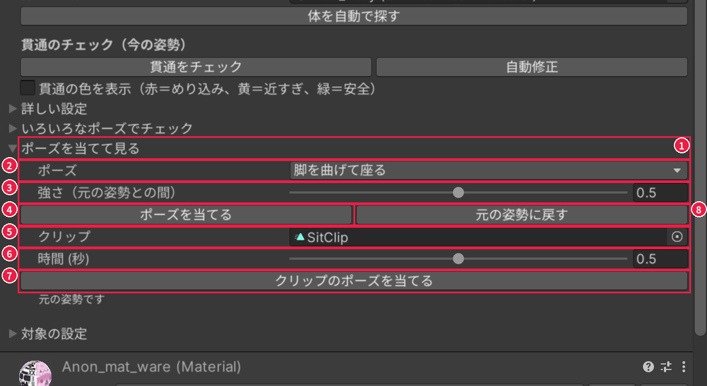
ポーズを当てても、形そのものは変わりません。 ポーズを当てている間は、頂点の点と貫通の色は出ません。 ［元の姿勢に戻す］を押すと、出ます。
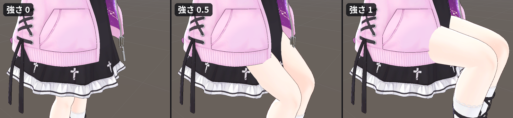
左から、強さ 0、0.5、1 で当てた姿勢です。
気をつけること
- すべての貫通が消えるとは限りません。直したあとに、数と見た目を、もう一度確かめます。
- ［全ポーズで自動修正］は、座るポーズの大きなめり込みには向きません。形がくずれたときは、Ctrl+Z で戻します。「脚についてくるように直す」を見てください。
- クリップのポーズは、［チェックするポーズを選ぶ］の一覧には入りません。まとめて調べたり直したりできるのは、一覧にあるポーズだけです。
ウェイトを塗り直して整える
ウェイトを塗り直し、合計や左右を整えたい
ウェイトは、頂点が、ボーンの動きにどれだけついていくかの割合です。 ブラシで塗り直すと、ついていく割合を変えられます。 左右をそろえることも、合計を 1 にそろえることもできます。 先に、服に Mesh Edit を付けて、［編集を開始］を押しておきます。 付け方は、「はじめての練習」にあります。 ウェイトを持つ服で、使えます。 基本の塗り方は、「脚についてくるように直す」にあります。
4 つのブラシ
［ウェイト］タブで、［ウェイトペイントのモードにする］をオンにします。 ボーンを選んでから、シーンビューをなぞります。
| ブラシ | なぞると |
|---|---|
| ［混ぜる］ | 選んだボーンのウェイトを、［目標の値］に近づけます。はじめて塗るときは、これです。 |
| ［足す］ | ［増減の量］だけ、増やします。 |
| ［引く］ | ［増減の量］だけ、減らします。減ったぶんは、ほかのボーンに配られます。 |
| ［ぼかす］ | まわりの頂点の平均に寄せて、なめらかにつなぎます。 |
なぞり始めに Shift を押すと、ぼかします。 Ctrl を押すと、足す・引くが入れ替わります。
左右をそろえて、合計をそろえます
［そのほかの機能］を開きます。 その中の［ブラシの詳しい設定・左右対称］と［ウェイトを整える］も、開いておきます。
-
［左右対称に塗る（X = 0 の面で、ボーン名の左右で対応）］をオンにします。
片側を塗ると、反対側にも、同じように塗られます。 左右が対になるボーン（たとえば、左腕と右腕）にも、塗られます。
-
左側のウェイトを、右側へ写すときは、［左 → 右へ写す］を押します。
右側のウェイトは、上書きされます。
-
選んだ頂点だけに行うときは、［下の一括操作は、選んでいる頂点だけに行う］をオンにします。
オフなら、全部の頂点が対象です。
-
［合計を 1 にそろえる（正規化）］を押します。
1 つの頂点のウェイトの合計が 1 でないと、服が縮んだり伸びたりして、崩れます。押すと、合計が 1 になるように直します。
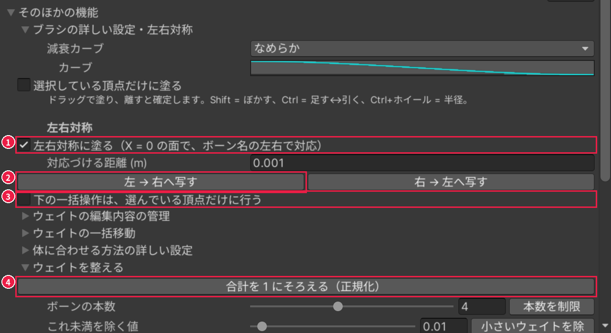
押すと、「○ 頂点のウェイトの合計を 1 にそろえました」と出ます。
気をつけること
- ウェイトを持たないメッシュでは、ウェイトタブの操作は出ません。
- ［左 → 右へ写す］は、右側のウェイトを上書きします。
ウェイトを別のボーンへ移す
ウェイトを別のボーンへ移したり、足したりしたい
あるボーンについているウェイトを、まとめて別のボーンへ移せます。 ヒエラルキーにある物を、塗れるボーンとして足すこともできます。 ウェイトを持つ服で、使えます。 先に、服に Mesh Edit を付けて、［編集を開始］を押しておきます。 付け方は、「はじめての練習」にあります。
ウェイトをまとめて移します
-
［ウェイト］タブで、［そのほかの機能］を開きます。その中の［ウェイトの一括移動］も、開きます。
-
選んだ頂点だけに移すときは、［下の一括操作は、選んでいる頂点だけに行う］をオンにします。
-
［移動元］で、ウェイトを取り出すボーンを選びます。
-
［移動先］で、ウェイトを移すボーンを選びます。
-
指先など、下につながるボーンも移すときは、［移動元の子孫のボーンも含める］をオンにします。
-
左右の組も移すときは、［反対側のボーンの組も移す（名前の左右）］をオンにします。
名前の左右が対になるボーン（たとえば、左腕と右腕）の組も、同じように移します。
-
［移動する］を押します。
移動元と移動先が、同じか、選んでいないと、押せません。押すと、移した頂点の数が出ます。
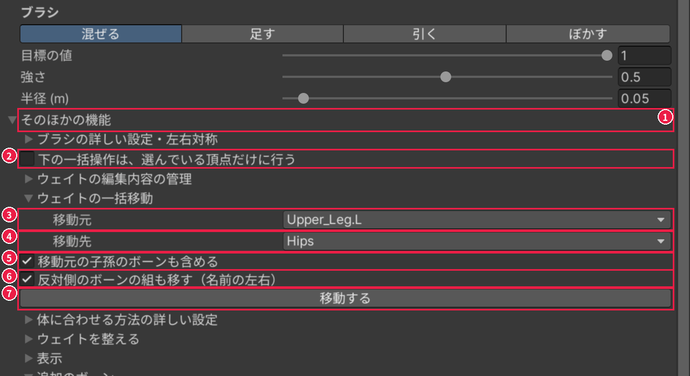
ボーンを足します
-
［そのほかの機能］の中の、［追加のボーン］を開きます。
-
ヒエラルキーから、足したい物を、［追加するボーン］へドラッグします。
-
［追加］を押します。
足したボーンは、ボーンの一覧に加わり、塗る対象に選ばれます。
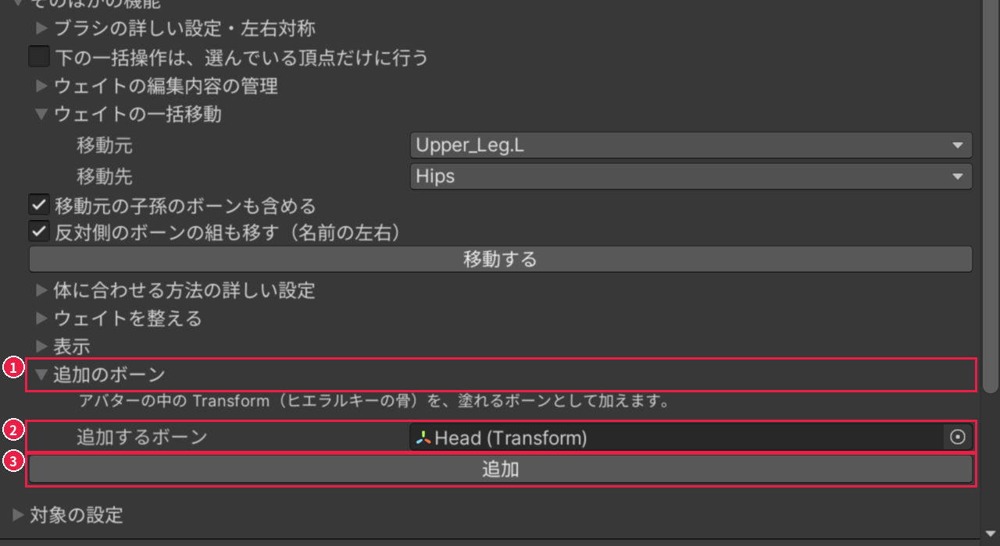
塗り方は、「ウェイトを塗り直して整える」にあります。
気をつけること
- ボーンを足しても、揺れの設定は作られません。揺れの設定は、メッシュ工房の外で、決めます。
- 移動元と移動先は、別々のボーンにします。
- ウェイトがない服では、使えません。
体のシェイプキーを服にも移す
体のシェイプキーを、服にも移したい
体の胸を大きくすると、服が体に埋まることがあります。 体のシェイプキーを、服にも読み込むと、服も体の変化に近づけて動かせます。 頂点の数が違っていても、近い位置を探して移します。 ブーツも、同じ手順で、体のハイヒールの形に近づけられます。 先に、服（またはブーツ）に Mesh Edit を付けて、［編集を開始］を押しておきます。 付け方は、「はじめての練習」にあります。 体のメッシュは、体の SkinnedMeshRenderer（メッシュを表示する部品）の、Mesh の欄に入っています。
体のシェイプキーを、読み込みます
-
［シェイプキー］タブで、［ほかから読み込む］を開きます。
-
「別のメッシュから」の［メッシュ］に、体のメッシュを入れます。
ヒエラルキーの体ではなく、メッシュを入れます。
-
一覧から、読み込みたいシェイプキーを、押して選びます。
たとえば、胸の形の Breast_big です。
-
［選んだものを読み込む］を押します。
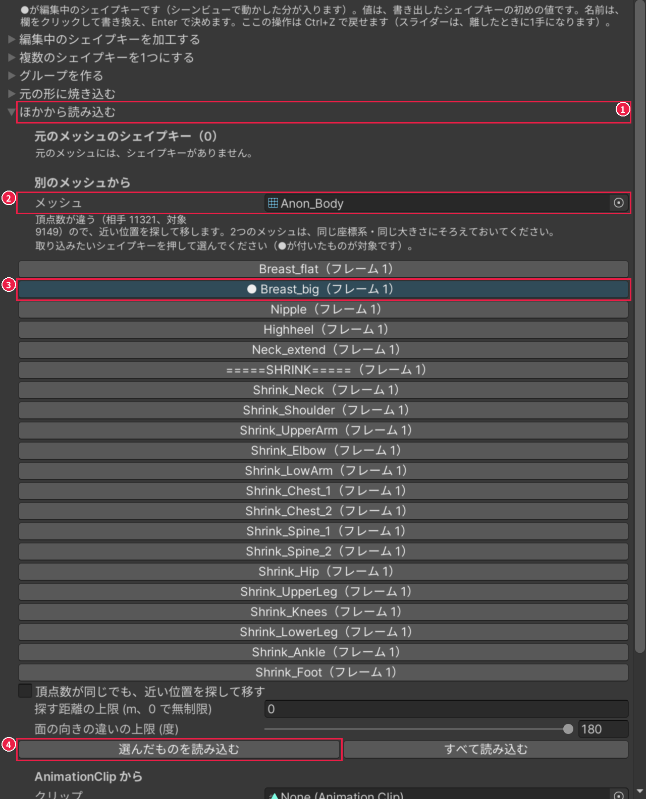
頂点の数が違うときは、「近い位置を探して移します」と案内が出ます。 2 つのメッシュは、同じ座標系（位置の決め方）・同じ大きさに、そろえておきます。 読み込んだシェイプキーは、一覧に加わります。 スライダーを 0 と 100 に動かして、形を見比べます。 編集中（●）の行は、●を押して○にすると、動かせます。 スライダーの使い方は、「スライダーで出し入れする」にあります。
気をつけること
- 試したところ、体の Breast_big を、ワンピースに読み込めました。体だけ大きくすると、胸から肌が出ていました。読み込んだあとは、肌が隠れました。めり込みの点も、元の姿勢と同じ数に戻りました。
- ただし、胸に重なるリボンが、横にずれて見えました。飾りがずれたときは、ブラシで整えます。
- 体の Highheel を、ブーツに読み込んでも試しました。Highheel を 100 にすると、真横から見て、ブーツが足の角度に合わせて変わりました。足とブーツのめり込む頂点は、約 600 個から約 170 個に減りましたが、残りました。いちばん深いめり込みは、ほぼ変わりませんでした。
- 仕上がりは、服によります。読み込んだあとは、見て確かめます。
別の形を読み込む・まとめる
別の形を読み込んで、シェイプキーにしたい
別の衣装のメッシュや、アニメーションの中にある形を、シェイプキーとして読み込めます。 複数のシェイプキーを、足して 1 つにすることもできます。 先に、服に Mesh Edit を付けて、［編集を開始］を押しておきます。 付け方は、「はじめての練習」にあります。
別のメッシュから、読み込みます
手順は、「体のシェイプキーを服にも移す」と同じです。 頂点の数が同じで、並びが違うときは、［頂点数が同じでも、近い位置を探して移す］をオンにします。 オンにすると、表面の近い位置を探して移します。
アニメーションの形を、シェイプキーにします
-
［シェイプキー］タブで、［ほかから読み込む］を開きます。
-
「AnimationClip から」の［クリップ］に、AnimationClip を入れます。
-
［時間 (秒)］で、使う時刻を決めます。
-
［この時刻の値を混ぜて、1つのシェイプキーにする］を押します。
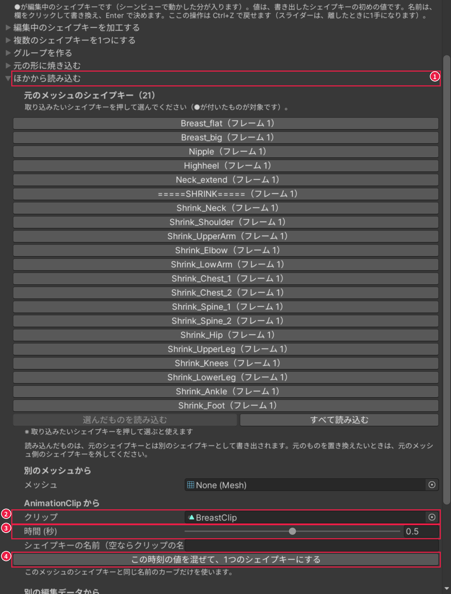
クリップの、その時刻のシェイプキーの値を混ぜた形が、新しいシェイプキーになります。 名前を付けたいときは、［シェイプキーの名前（空ならクリップの名前）］に入れます。 このメッシュのシェイプキーと同じ名前のカーブだけを使います。 同じ名前のカーブが無いと、作れません。
複数のシェイプキーを、1 つにまとめます
先に、まとめたいシェイプキーの値を、決めておきます。 今の値で、足されます。
-
［複数のシェイプキーを1つにする］を開きます。
-
一覧で、まとめたいシェイプキーを、2 つ以上、押して選びます。
-
［新しい名前］に、できるシェイプキーの名前を入れます。
-
［今の値で足して1つにする］を押します。
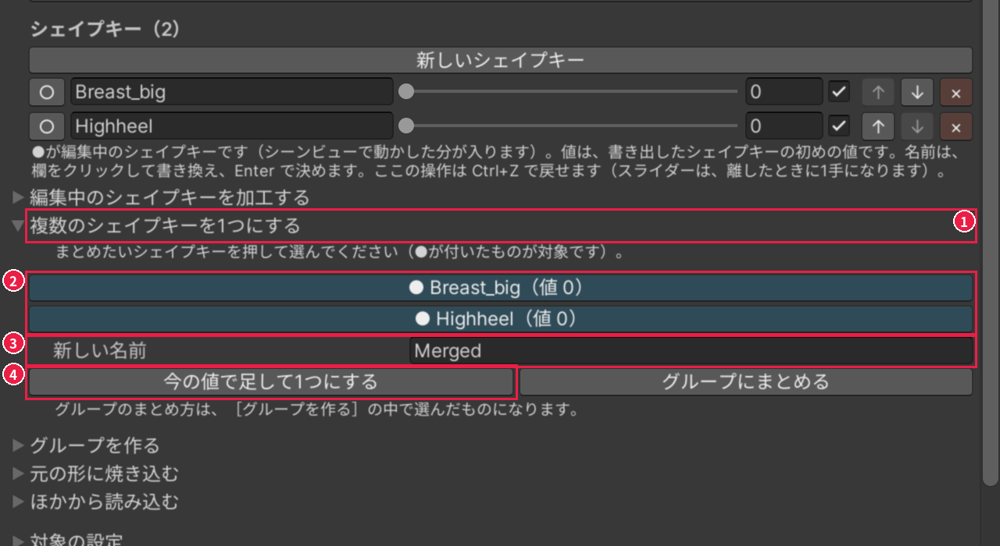
元のシェイプキーは、オフになって残ります。
気をつけること
- 実アバターの服で、どのくらいうまく読み込めるかは、まだ確かめていません。読み込んだあとは、形を見て確かめます。
元の形に焼き込む・服の更新に合わせる
直した形を元の形に入れたい。服の更新にも合わせたい
［自動修正］で直した形は、「貫通修正」というシェイプキーに入ります。 元の服の形は、変わりません。 強さは、スライダーで変えられます。 一部だけ残すときは、「シェイプキーの一部を残す」を見てください。 先に、服に Mesh Edit を付けて、［編集を開始］を押しておきます。 付け方は、「はじめての練習」にあります。
元の形に焼き込みます
焼き込むとは、シェイプキーにせず、メッシュの元の形そのものに入れることです。 書き出しやビルドのときに、入ります。
-
［シェイプキー］タブで、［元の形に焼き込む］を開きます。
-
［焼き込む対象］で、元の形に入れるシェイプキーを選びます。
焼き込んだものは、スライダーで出し入れできなくなります。
服が更新されたとき
服のメッシュが更新されて、頂点の並びが変わっても、直した形を、新しい並びへ移し直せます。 前に編集した、同じ Mesh Edit の編集データが、残っているときに使えます。
-
編集中なら、［保存して終了］を押します。
編集中は、［元のメッシュ］を変えられません。
-
［対象の設定］を開きます。
-
［元のメッシュ］に、更新後のメッシュを入れます。
-
［編集を開始］を押します。
元のメッシュが変わっていると、頂点の対応を取り直します。 対応できなかった頂点の数が、警告に出ます。 「アップロードで直した形にする」にも、［対象の設定］の開き方があります。
気をつけること
- 近い位置を探して移すので、おおよその形になります。移したあとは、形を見て確かめます。
- ウェイトの塗りや、選択セット（名前を付けて覚えた選択）は、移る保証がありません。
シェイプキーの一部を残す
シェイプキーの一部を残し、形を比べたい
直した形の、一部だけを残したいことがあります。 たとえば、右側の変形だけを残します。 シェイプキーを複製して試すと、元の形を残したまま、比べられます。 複製を並べて見比べて、よいほうだけを残せます。 先に、服に Mesh Edit を付けて、［編集を開始］を押しておきます。 付け方は、「はじめての練習」にあります。 変形のあるシェイプキーが、1 つ以上、要ります。
複製して、一部だけ残します
残したい頂点を、先に、シーンビューで選んでおきます。 選び方は、「つながった部品を選ぶ」にあります。
-
比べたいシェイプキーの行の［○］を押して、［●］にします。
-
［編集中のシェイプキーを加工する］を開きます。
-
［複製］を押します。
同じ変形の、別のシェイプキーが、すぐ下にできます。複製の行の［○］を押すと、複製を編集中にできます。
-
［効かせる強さ］を、1 にします。
-
［選んだ範囲だけ残す］を押します。
選んだ頂点の変形だけが残ります。ほかの頂点の変形は、取り除かれます。
-
別の方法として、弱めたい頂点を選んで、［選んだ範囲の変形を取り除く］を押します。
［効かせる強さ］が 1 なら、取り除かれます。小さくすると、弱まるだけです。
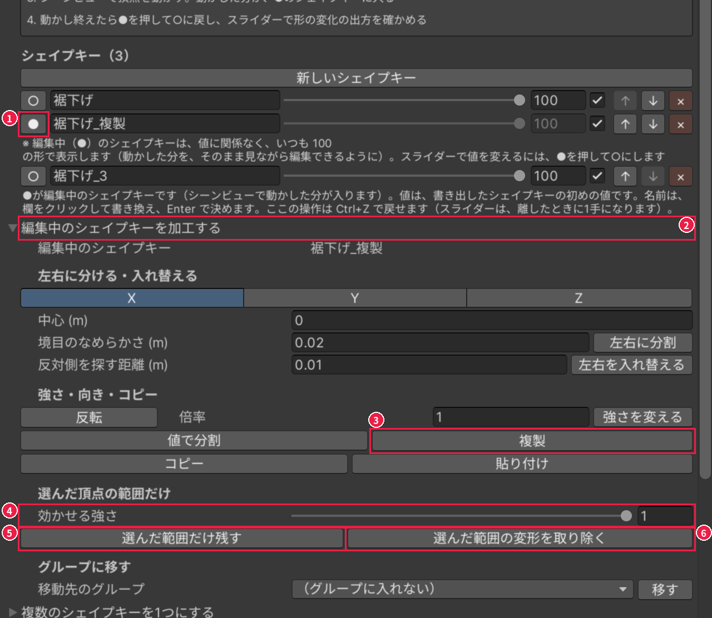
値で分ける・コピーする・見比べる
［値で分割］の前に、行の［●］を押して、編集をやめます。 スライダーを 50 にしてから、もう一度［○］を押して、編集中にします。
-
［値で分割］を押します。
50% の分（値 100）と、残りの分（値 0）の、2 つができます。元のシェイプキーは、オフになって残ります。
-
コピーしたいシェイプキーを［●］にして、［コピー］を押します。
-
貼り付け先を［●］にして、［貼り付け］を押します。
貼り付け先の中身は、置き換わります。
-
編集をやめた行の、スライダーを動かして、形を見比べます。
-
行の有効のチェックを、入れたり外したりして、見比べます。
-
いらないシェイプキーは、行の［×］で消します。
確認の窓が出ます。Ctrl+Z で戻せます。
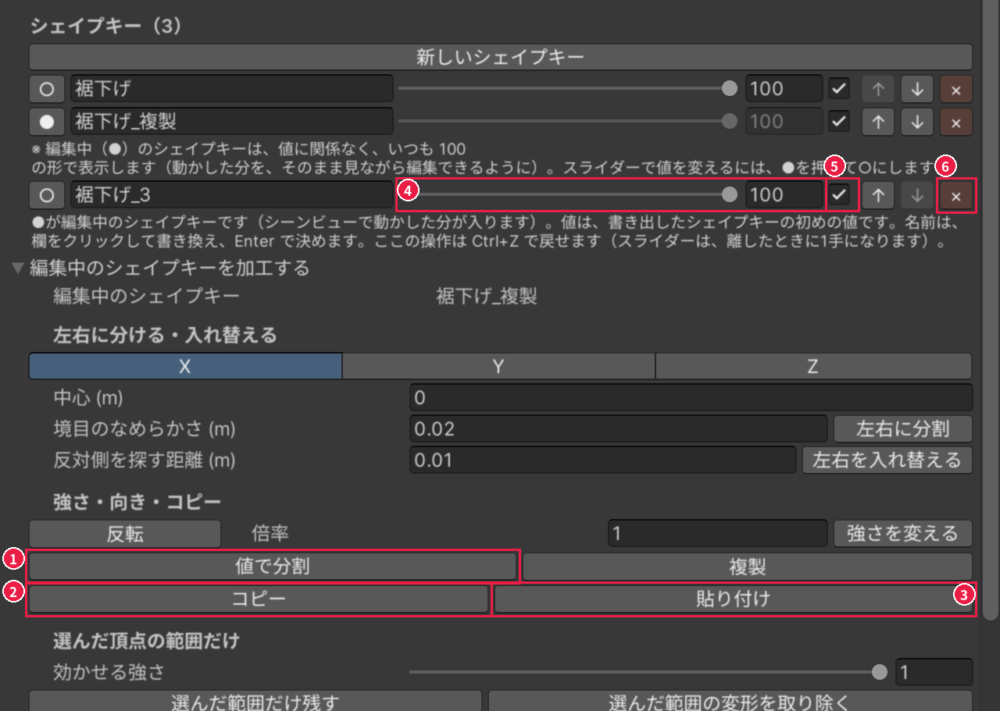
気をつけること
- 編集中（●）の行のスライダーは、動かせません。●を押して○にすると、動かせます。
- ［×］で消せるのは、この編集の中のシェイプキーです。元のメッシュにあるシェイプキーは、変わりません。
表情を作って動かす
表情を作って、スライダーやクリップで動かしたい
顔のメッシュに、自分で表情のシェイプキーを作れます。 もとからある表情を、取り込んで、直すこともできます。 できた表情は、スライダーで強さを変えられます。 オンとオフを切り替えるクリップ（アニメーションのファイル）も、作れます。 先に、顔に Mesh Edit を付けて、［編集を開始］を押しておきます。 付け方は、「はじめての練習」にあります。
新しい表情を作ります
-
［シェイプキー］タブで、［新しいシェイプキー］を押します。
-
［スカルプト］タブで、［スカルプトのモードにする］をオンにします。
-
顔を、少しずつなぞります。
なぞり方は、「ふくらませる・へこませる」にあります。 なぞり終えたら、［シェイプキー］タブで●を押して○に戻します。 スライダーで、形の出方を確かめます。
もとからある表情を、取り込みます
-
［ほかから読み込む］を開きます。
-
「元のメッシュのシェイプキー」の一覧で、取り込む表情を、押して選びます。
-
［選んだものを読み込む］を押します。
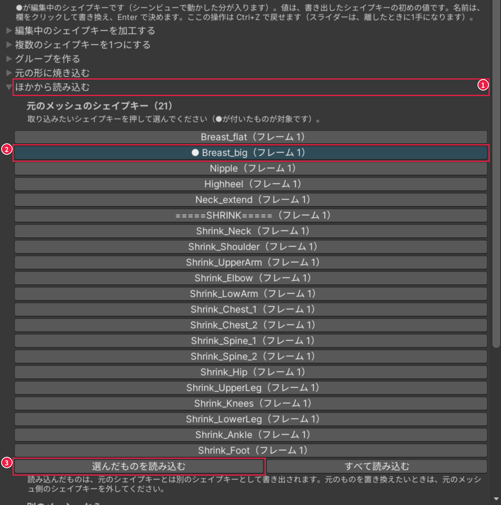
取り込んだものは、別のシェイプキーとして、一覧に入ります。 元のシェイプキーは、そのまま残ります。
目の下だけ、弱めます
-
取り込んだ行の［○］を押して、［●］にします。
-
［編集中のシェイプキーを加工する］を開いて、［複製］を押します。
-
複製の行を［●］にして、弱めたい部分の頂点を選びます。
-
［効かせる強さ］を決めて、［選んだ範囲の変形を取り除く］を押します。
-
［●］を押して編集をやめ、元と複製のスライダーを、0・50・100 に動かして見比べます。
両方を 100 にすると、変形が重なります。 片方ずつ、見比べます。 くわしくは、「シェイプキーの一部を残す」にあります。
オンとオフのクリップを作ります
-
［出力］タブで、［シェイプキーのオン・オフのクリップを作る］を開きます。
-
クリップにしたいシェイプキーを、押して選びます。
-
［オン・オフのクリップを作る］を押します。
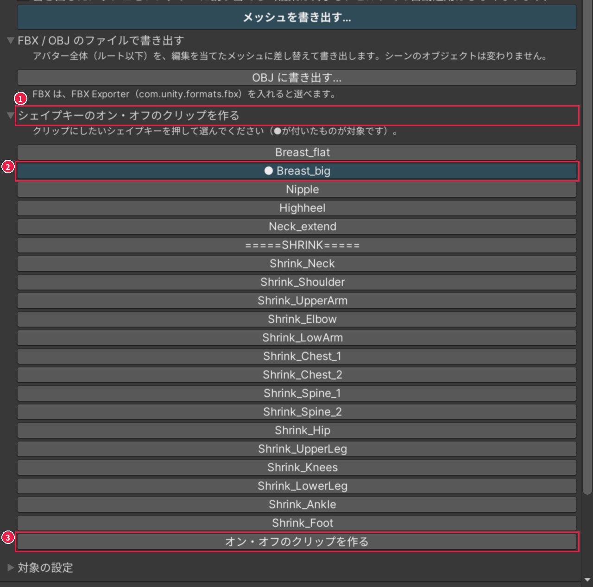
選んだシェイプキーごとに、オフ（0）とオン（100）のクリップを作ります。 できる場所は、Assets/GP13_MeshEdit/Clips です。
気をつけること
- 試したところ、頬をふくらませ、口の端を下げた表情を作れました。スライダーを動かすと、笑顔からふくれっ面へ変わるのが、見て分かりました。小さな変形は、スライダーを 100 にして確かめます。
- 取り込んだ表情を直すことも試しました。選んだ 80 頂点で、いちばん大きな動きが、1.29 mm から 0 mm になりました。元のキーは変わらず、直したものは別のキーです。
- クリップを作るところまでです。メニューやジェスチャーの設定は、別に行います。
ポリゴンを減らして軽くする
ポリゴンを減らして、服を軽くしたい
ポリゴンが多い服は、重くなります。 形をなるべく保ったまま、ポリゴン（三角形）の数を減らせます。 シェイプキーとウェイトは、減らしたあとの頂点へ、そのまま移ります。 先に、服に Mesh Edit を付けて、［編集を開始］を押しておきます。 付け方は、「はじめての練習」にあります。
全体を減らします
-
［ポリゴン］タブで、［残す割合］を決めます。
0.5 なら、頂点の数が半分になります。
-
［ポリゴンを減らす］を押します。
確認の窓が出たら、「実行する」を押します。
-
［三角形の数］が、減ったことを確かめます。
「頂点 ○ → ○、三角形 ○ → ○」と、お知らせも出ます。
-
部分だけ減らすときは、頂点を選んでから、［選んだ部分のポリゴンを減らす］を押します。
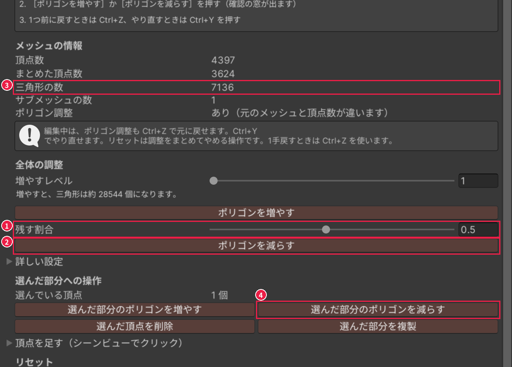
試したときは、［残す割合］を 0.5 にしました。 髪は、頂点が 8,808 から 4,418 になりました。 ワンピースは、8,409 から 4,397 になりました。 Ctrl+Z で、1 つ前に戻せます。
守る所を決めます
-
［詳しい設定］を開きます。
-
メッシュの端（穴のふち）を守るときは、［メッシュの縁（開いた境界）を守る］をオンにします。
-
模様のずれを防ぐときは、［UV の継ぎ目を守る］をオンにします。
-
シェイプキーで動かした所を守るときは、［動かした頂点を守る］をオンにします。
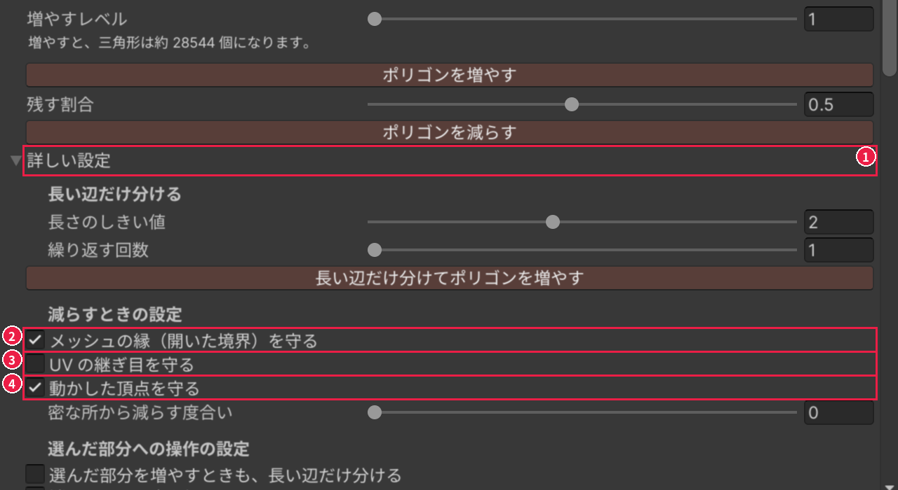
はじめは、［メッシュの縁（開いた境界）を守る］と［動かした頂点を守る］がオンです。 ［UV の継ぎ目を守る］は、オフです。 マテリアルの境目は、いつも守られます。 つながった部品ごとに、最低 4 つの頂点が残ります。 面が裏返るような減らし方は、しません。
気をつけること
- 残る頂点の数は、［残す割合］とぴったり合うとは限りません。形が完全に同じになるとも、限りません。
- 部分だけ減らすときの割合は、選んだ部分の頂点に対する目標です。
画面の説明（頂点・スカルプト・布・ウェイト）
インスペクターのタブは、全部で 9 つあります。 ここでは、はじめの 4 つを説明します。
やりたいことから、手順の章を探せます。 どれも、Unity の中だけで行えます。
- 服のウェイトを、体に近づける: 「脚についてくるように直す」
- ウェイトを、ブラシで塗り直す: 「ウェイトを塗り直して整える」
- 粘土のように、形を整える: 「ふくらませる・へこませる」
- ポリゴンを減らす: 「ポリゴンを減らして軽くする」
- 形を、シェイプキーで出し入れする: 「スライダーで出し入れする」
- 陰影（法線）を整える: 「画面の説明（出力・設定）」の設定タブ
頂点タブ
点を選んで、矢印で動かすタブです。 動かした点のまわりも、なめらかについてきます。
- 影響範囲: いっしょに動く範囲の大きさです。
- 左右対称: 片側を動かすと、反対側も動きます。
- ［元に戻す］と［やり直す］: 1 つ前に戻したり、やり直したりします。
- ［数値入力・押し出し・なめらかにする］: 数字で動かす、押し出す、ならす、の操作が入っています。開き方は、「数値で動かす・押し出す」にあります。
- 選んだ点のまわりをならすときは、［強さ］と［回数］を決めて、［選択範囲をなめらかにする］を押します。全体が縮みにくいようにするには、［縮みにくいならし方にする］をオンにします。
- ［メッシュの縁を動かさない］（はじめはオン）は、穴や端の点を動かさずに、ならします。点が選ばれていないときや、変わらなかったときは、お知らせが出ます。
-
［頂点］タブを押します。

スカルプトタブ
ブラシでなぞって、形を整えるタブです。 盛り上げたり、へこませたり、ならしたりできます。
- ［半径 (m)］: ブラシの大きさです。
- ［強さ］: ブラシの効き方です。
- ［重ね着の保護］: 別の服や体の面を横切る手前で止めます。［詳しい設定］で切り替えられます。
-
［スカルプト］タブを押します。

布タブ
布のように引っ張るタブです。 動かしたくない所には、ピンを打ちます。
- ［つまむ］: 布を引っ張ります。
- ［詳しい設定］の［伸びすぎ・折り返しを抑える］: はじめはオンです。形を保てる範囲で移動を止めます。
- ［詳しい設定］の［許す伸び (%)］: この操作で辺を伸ばしてよい割合です。5 は 5% です。
- ［ピンを塗る］: ピンを打ちます。
- ［ピンを外す］: ピンを外します。
-
［布］タブを押します。

ウェイトタブ
服のウェイトを、体に合わせたり、ブラシで塗ったりするタブです。 脚を動かしたときの、服のついてき方を直せます。
- ［プリセットで設定する］: おすすめの設定で、服のウェイトを体に近づけます。押すと、［体に合わせる強さ］と［確かめるポーズ］が出て、丁度いい所で［この強さに決める］を押します。
- ［検索］: ボーンの名前で、一覧を絞ります。
- ブラシ: ［混ぜる］［足す］［引く］［ぼかす］があります。
-
［ウェイト］タブを押します。

見えるようにする設定
形や数は、色・線・数字で見られます。 見たいものによって、設定する場所が違います。
- 布の伸び（青が縮み、赤が伸び）: ［布］タブの［表示の設定］。「布のように引っ張る」にあります。
- ウェイト（ついていく割合を色で）: ［ウェイト］タブの［そのほかの機能］の中の［表示］。「脚についてくるように直す」にあります。
- 面の向き（法線）と接線の線: ［設定］タブの［法線・接線の表示］。
- 頂点の点: ［設定］タブの［頂点の表示と操作］。
- 頂点と三角形の数: ［ポリゴン］タブの［頂点数］と［三角形の数］。
画面の説明（ポリゴン・シェイプキー・チェック）
つづきの 3 つのタブです。
ポリゴンタブ
ポリゴンを増やしたり、減らしたりするタブです。 点を足したり、消したりもできます。
- 編集中は、このタブの操作も Ctrl+Z で戻せます。Ctrl+Y でやり直せます。
- やり直したいときは、［元のメッシュに戻す（リセット）］を押します。
- ［増やすレベル］と［ポリゴンを増やす］: レベルは 1〜3 で、1 で三角形が 4 倍、2 で 16 倍です。増えた点のウェイトとシェイプキーは、まわりの点を混ぜて作ります。
- 選んだ点のまわりに行う 4 つのボタンは、先に頂点を選びます。押すと、確認の窓が出ます。
- ［選んだ部分のポリゴンを増やす］: 長い辺だけ分けることもできます。［詳しい設定］の［選んだ部分を増やすときも、長い辺だけ分ける］をオンにします。［長さのしきい値］より長い辺だけを分けます。
- ［選んだ部分のポリゴンを減らす］: 手順は、「ポリゴンを減らして軽くする」にあります。
- ［選んだ頂点を削除］: ［詳しい設定］の［消したあとの穴を埋める］（はじめはオン）がオンだと、削除でできた穴を埋めます。元から開いている縁に届く穴などは、埋まりません。理由は、結果に出ます。
- ［選んだ部分を複製］: 選んだ点でできる三角形を、複製します。［詳しい設定］の［複製をずらす量 (m)］で、ずらす量を決めます。［複製を別のサブメッシュにする］をオンにすると、マテリアルを別に付けられる部分にできます。
- ［頂点を足す（シーンビューでクリック）］: ［頂点を足すモードにする］をオンにして、面や辺の上をクリックし、予定の点を置きます。［確定して頂点を足す］で足します。置き方は、「画面の説明（ウェイト・ポリゴンモード）」にあります。
- 辺の近くの点は、［辺へ寄せる距離 (m)］の内側なら、辺の上に足されます。［既存の頂点とみなす距離 (m)］の内側の点は、足されません。
-
［ポリゴン］タブを押します。

シェイプキータブ
作ったシェイプキーの一覧のタブです。 スライダーで出し入れしたり、名前を変えたりできます。
- ［新しいシェイプキー］: シェイプキーを 1 つ作ります。
- ［グループを作る］: いくつかをまとめて動かします。
- ［グループを作る］の［まとめ方］は、［なし（フォルダ）］［まとめる］［順に重ねる］［順に切り替える］から選べます。つぎに［複数のシェイプキーを1つにする］を開き、一覧で押して選んで、［グループにまとめる］を押します。
- ［順に重ねる］は、上から順に形が積み重なります。［順に切り替える］は、上から順に形が切り替わります。順番は、グループの中の並びです。［今の値で足して1つにする］は、別の操作です。
- ［編集中のシェイプキーを加工する］: 一覧で［○］を押して［●］にした形に行う操作です。［左右に分割］は、［中心 (m)］を境に、「名前_L」「名前_R」の 2 つに分けます。元の形は、オフで残ります。［強さを変える］は、［倍率］を変形にかけます。2 で 2 倍、0.5 で半分です。
- 左用の形から右用を作るときは、先に［複製］で複製を作り、その行の［○］を押して［●］にして、［左右を入れ替える］を押します。［反対側を探す距離 (m)］の中に反対側の点がない所は、動きません。
-
［シェイプキー］タブを押します。

チェックタブ
服が体にめり込んでいないか調べて、自動で直すタブです。 いろいろなポーズでも確かめられます。
- ［貫通をチェック］: めり込んだ点を、赤く見せます。
- ［自動修正］: めり込みを外へ押し出します。
-
［チェック］タブを押します。

画面の説明（出力・設定）
最後の 2 つのタブです。
どのタブも、いちばん上に「まずやること」が出ます。 欄やボタンにマウスを置くと、説明が出ます。 押せないボタンには、押せるようになる条件が出ます。 条件が出ないボタンもあります。 ［編集を開始］を押す前は、使えないタブもあります。
出力タブ
直した形を、ファイルに書き出すタブです。 FBX や OBJ のファイルも作れます。
- ［メッシュを書き出す…］: メッシュのファイルを作ります。
- 書き出さなくても、ビルドのときに自動で当たります。
- ［シェイプキー付き］: スライダーで出し入れできるまま、書き出します。
- ［焼き込み（シェイプキーなし）］: 今の値で足した形にして、書き出します。元のメッシュにあったシェイプキーは、残ります。
- ［書き出したメッシュをレンダラーに割り当てる（編集は終了し、ビルドでの自動適用はしなくなります）］: オンにします。書き出したメッシュが、そのまま服に入ります。メッシュ工房がなくても使えます。
- ［FBX / OBJ のファイルで書き出す］: ［OBJ に書き出す…］か［FBX に書き出す…］で、アバター全体を書き出します。FBX は、FBX Exporter が入っているときだけ選べます。OBJ は形だけで、ボーンとシェイプキーは入りません。
-
［出力］タブを押します。

設定タブ
法線（面の向き）の作り方や、表示を決めるタブです。 複数のメッシュを、同時に編集することもできます。
- ［プリセット］: 気に入った設定を、保存しておけます。
- ［法線・接線の表示］と［頂点の表示と操作］: 法線や接線の線と、頂点の点を、見やすくします。
- ［シェイプキーの法線］: 形が変わったあとの陰影の作り方です。ふつうは［再計算しない］で使えます。［全計算］は、すべて作り直します。［ベース差分］と［格納法線を輸送］は、元の陰影の作り込みを活かして、作り直します。保たれ方は、素材によります。
- 作り直した法線は、［シェイプキー付き］で書き出すときやビルドのときに、シェイプキーの差分として入ります。［法線の詳しい設定］の［接線も作り直す］（はじめはオン）がオンだと、接線の差分も入ります。元のメッシュに接線があるときだけです。［焼き込み（シェイプキーなし）］では、入りません。
- ［法線・接線の表示］: ［法線を表示］と［接線を表示］をオンにすると、頂点から出る線で見えます。接線は、ノーマルマップの向きを決める線です。UV（テクスチャの貼り方）がないと出ません。［選んでいる頂点だけ］をオンにすると、選んだ点の線だけになります。
- ［プリセット］を開き、［種類］と［名前］を決めて、［この名前で保存］を押すと保存できます。同じ名前は、上書きされます。
- 別のパソコンで使うときは、［ファイルに書き出す］でファイルを作ります。そのパソコンで［ファイルから読み込む］を押して選び、一覧から選んで［呼び出す］を押します。
-
［設定］タブを押します。

タブの外の設定
- ［仕上がりをシーンに表示する］: 編集を終えたあとの「仕上がり」にあります（はじめはオン）。オンのあいだ、直した形がシーンに出ます。一時的な表示で、元のメッシュも、シーンの保存内容も変わりません。アップロード先の実物とは別です。［ビルドのときに当てる］が［自動では当てない］のときは、使えません。
- ［対象の設定］の［保存のときに元のメッシュに戻す（Prefab の保護）］: はじめはオンです。シーンや Prefab（ひな形として保存した物）を保存するあいだ、編集中の一時的なメッシュを、元のメッシュに戻します。編集内容の保存（［保存］）とは別です。
画面の説明（頂点・スカルプト・布モード）
シーンビューの右下に、「GP13 メッシュ編集」という小さな窓が出ます。 これが、設定の窓です。 ここで、モードを切りかえます。
頂点モード
点を選んで、矢印で動かします。
- クリック: 点を 1 つ選びます。
- Shift+クリック: 選んだ点に足します。
- ドラッグ: 四角で囲んで選びます。
- Alt+クリック: ひと続きの列を選びます。
- W / E / R: 移動・回転・拡大縮小の矢印に切りかえます。
- Esc: 途中の変形を取り消します。
-
設定の窓の［頂点］を押します。

スカルプトモード
ブラシでなぞって、形を変えます。
- ドラッグ: ブラシでなぞります。
- Ctrl+ドラッグ: 盛る・削るを逆にします。
- Ctrl+ホイール: ブラシの半径を変えます。
- Shift+ホイール: ブラシの強さを変えます。
-
設定の窓の［スカルプト］を押します。

布モード
つまんで引っ張ったり、ピンを塗ったりします。
- ドラッグ（［つまむ］のとき）: 布を引っ張ります。
- ドラッグ（［ピンを塗る］のとき）: ピンを塗ります。
- Ctrl+ドラッグ: 塗る・外すを逆にします。
- Esc: つまんだ引っ張りを取り消します。
-
設定の窓の［布］を押します。

画面の説明（ウェイト・ポリゴンモード）
つづきの 2 つのモードです。
ウェイトモード
ウェイトをブラシで塗ります。 塗るボーンは、先にウェイトタブで選びます。
- ドラッグ: ウェイトを塗ります。
- Shift+ドラッグ: ぼかします。
- Ctrl+ドラッグ: 足す・引くを入れ替えます。
-
設定の窓の［ウェイト］を押します。

ポリゴンモード
表面をクリックして、点を足したい場所を置きます。 Enter で、まとめて確定します。
- クリック: 足す予定の点を置きます。
- Enter: 予定の点をまとめて確定します。
- Backspace / Delete: 最後の 1 点を取り消します。
- Esc: 予定の点を、すべて取り消します。
-
設定の窓の［ポリゴン］を押します。

困ったとき
タブの中身が灰色で、使えない
- どうなっているか: まだ編集を始めていません。
- どうすればよいか: ［編集を開始］を押します。
点が選べない・見つけにくい
- どうなっているか: 点が多く、重なっています。
- どうすればよいか: ホイールで拡大して選びます。
裾をひと回り選べない
- どうなっているか: Alt+クリックで、足りない所が出ることがあります。
- どうすればよいか: Shift を押しながらクリックして足すか、ドラッグで囲みます。
めり込みが直らない
- どうなっているか: 重ね着や、両立しないポーズがあります。
- どうすればよいか: 外側の服で試します。尖ったら Ctrl+Z で戻します。素材に体を隠す形がある場合は、素材の手引書も見ます。
座ると、服が太ももにめり込む
- どうなっているか: 太ももの動きに、服の裾がついていっていません。
- どうすればよいか: 「脚についてくるように直す」を見て、ウェイトタブの［プリセットで設定する］を押し、強さを決めます。足りない所は、太もものウェイトをブラシで塗ります。
布として引っ張っても、ついてこない部品がある
- どうなっているか: 分かれた部品（リボンなど）は、ひと続きの服ではありません。
- どうすればよいか: その部品は、頂点タブで別に動かします。
布が大きく伸びたままになる
- どうなっているか: 保護がオフか、何度も伸ばしています。伸びの保護は1回の操作ごとです。
- どうすればよいか: Ctrl+Z で戻し、小さく引きます。不要なピンは［ピンを外す］で外します。
布がマウスの位置まで動かない
- どうなっているか: ［伸びすぎ・折り返しを抑える］が移動を制限しています。［動かせた割合］で量が分かります。
- どうすればよいか: 小さく引くか、ピンを見直します。保護を外す場合は、貫通や面の裏返りを確かめます。
保存のあと、Unity の矢印が出た
- どうなっているか: 服全体を動かす矢印です。
- どうすればよいか: さわりません。さわったときは、Ctrl+Z で戻します。
スライダーを動かしても、形が変わらない
- どうなっているか: 「仕上がり」の下のチェックが、オフかもしれません。
- どうすればよいか: オンにします。［ビルドのときに当てる］が［自動では当てない］のときも、表示されません。
編集中のシェイプキーのスライダーが使えない
- どうなっているか: ●の行は、編集中の形を 100 の状態で見せています。
- どうすればよいか: ●を押して○に戻してから、スライダーを動かします。
シェイプキーの名前が分かりにくい
- どうなっているか: 自動の名前です。
- どうすればよいか: シェイプキータブの一覧で、名前を書きかえます。
アップロードした姿に、直した形が出ない
- どうなっているか: NDMF が入っていないと、自動では当たりません。
- どうすればよいか: 「アップロードで直した形にする」を見て、書き出します。
保存せずに閉じてしまった
- どうなっているか: 保存した内容は、同じ場面（シーン）で確かめます。
- どうすればよいか: シーンを開き、［仕上がり］で確かめます。
- 次からは、閉じる前に［保存］か［保存して終了］を押します。編集がファイルに書き込まれます。
Add Component に「Mesh Edit」が出ない
- どうなっているか: ツールが、Unity に入っていません。
- どうすればよいか: 「入れ方」を、もう一度やり直します。
プロジェクトウィンドウに MeshKobo フォルダが出ない
- どうなっているか: ZIP ファイルをまだ解凍していないか、取り込みの窓で［Import］を押す前に閉じたかもしれません。
- どうすればよいか: 入れ方に戻り、
MeshKobo.unitypackageを取り込み直します。
取り込んだあと、Unity に赤いエラーが出た
- どうなっているか: 古い版の
MeshKoboフォルダが残っているか、同じツールが別の方法でも入っているかもしれません。 - どうすればよいか: プロジェクトウィンドウで
Assetsの中のMeshKoboフォルダを消し、MeshKobo.unitypackageを取り込み直します。 Package Manager の一覧に「GP13 Mesh Edit」が出ているときは、それを選んで［Remove］を押してから、取り込み直します。
ポリゴン調整をやり直したい
- どうなっているか: 三角形の数を変えたり、点を消したりしました。
- どうすればよいか: 編集中は Ctrl+Z で、調整前の状態へ戻せます。戻しすぎたら Ctrl+Y でやり直せます。
- ［元のメッシュに戻す（リセット）］は、消した点を周りの面から求め直します。1手戻す操作とは違います。
- 編集を始めてからの変更をすべてやめるときは、［破棄］を使います。
言葉の一覧
この手引書で使う言葉を、50 音順ではなく、使う順に並べました。
Unity の言葉
- プロジェクト: Unity で作業しているデータの入れ物です。
- ヒエラルキー: Unity の左にある、置いてある物の一覧です。
- インスペクター: Unity の右にある、選んだ物の設定の窓です。
- シーンビュー: Unity の真ん中にある、服を見る画面です。
- シーン: アバターや服を置いて作業している場面です。
- プロジェクトウィンドウ: Unity の下にある、プロジェクトの中のファイルの一覧です。
- Alt+クリック: Alt キーを押しながら、クリックすることです。
服の言葉
- メッシュ: 服の形そのもののデータです。
- 頂点: 服の形を決めている小さな点です。
- ポリゴン: 服の表面をつくる三角形です。
- 法線: 面の向きです。明るさの付き方が決まります。
- ボーン: アバターの骨です。服の頂点は、ボーンについて動きます。
- ウェイト: 頂点が、ボーンの動きにどれだけついていくかの割合です。
- 裾: 服のいちばん下のふちです。
- 貫通（めり込み）: 服が体の中に入りこむことです。
メッシュ工房の言葉
- スカルプト: 粘土をこねるように、ブラシでなぞって形を整えることです。
- シェイプキー: 形の変化を、0 から 100 のスライダーで出し入れするものです。Unity の中では BlendShape と呼びます。
- 影響範囲: 選んだ点といっしょに動く範囲です。
- ピン: 動かしたくない点に打つ印です。ピンを打った点は動きません。
- 左右対称: 片側を動かすと、反対側も鏡のように動くことです。
- 破棄: 保存していない編集をやめて、始める前に戻すことです。
- 設定の窓: シーンビューの右下に出る、小さな窓です。
- プリセット: 設定を保存して、また使えるようにしたものです。
アップロードの言葉
- ビルド: アップロード用に、アバターをまとめて作ることです。
- NDMF: アップロード前に、自動で処理を足す仕組みです。